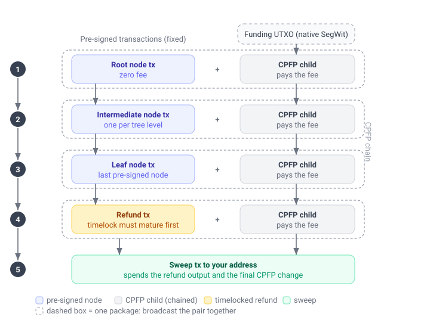
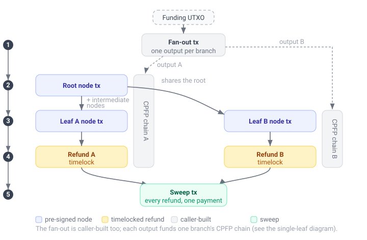

Recovering funds
Your Spark balance is held in a tree of pre-signed Bitcoin transactions, so its funds can always be moved onto the Bitcoin blockchain. Recovering funds does that, in two situations:
- Funds that left your balance. Some of your funds can end up on-chain, where Spark can no longer move them and only an on-chain transaction to an address of yours recovers them.
- A unilateral exit of your balance. If the Spark operators stop cooperating with normal withdrawals, because they are unreachable or refuse to serve your wallet, you can move your balance on-chain without them.
The balance is split into leaves, and each leaf is recovered in one of two ways, which the SDK picks from the leaf's state:
- A unilateral exit takes the leaf on-chain through its own pre-signed transactions. It needs nothing from the operators. Those transactions pay no fee on their own, so you pay their fees from a Bitcoin UTXO of your own, and the exit can take several days because of on-chain timelocks.
- A cooperative recovery is for a leaf the Spark operators moved on-chain. Its funds then sit in an output no pre-signed transaction spends, so the operators co-sign one transaction that sends them to your address. The transaction pays its fee out of the leaf's value, so it needs no funding.
Recoverable funds
Funds that left your balance are not part of balance_satsbalance_satsbalanceSatsbalanceSatsbalanceSatsbalanceSatsbalanceSatsBalanceSatsBalanceSats. get_infoget_infogetInfogetInfogetInfogetInfogetInfoGetInfoGetInfo reports them separately, as recoverable_funds_satsrecoverable_funds_satsrecoverableFundsSatsrecoverableFundsSatsrecoverableFundsSatsrecoverableFundsSatsrecoverableFundsSatsRecoverableFundsSatsRecoverableFundsSats. A sync adds a leaf's value to that total when it sees the leaf leave your balance. The value leaves the total once the SDK has seen the recovery pay the funds out on-chain: a cooperative recovery in a block, or a unilateral exit's sweep in a block. prepare_recover_fundsprepare_recover_fundsprepareRecoverFundsprepareRecoverFundsprepareRecoverFundsprepareRecoverFundsprepareRecoverFundsPrepareRecoverFundsPrepareRecoverFunds, recover_fundsrecover_fundsrecoverFundsrecoverFundsrecoverFundsrecoverFundsrecoverFundsRecoverFundsRecoverFunds and check_recover_fundscheck_recover_fundscheckRecoverFundscheckRecoverFundscheckRecoverFundscheckRecoverFundscheckRecoverFundsCheckRecoverFundsCheckRecoverFunds record that when they find it on-chain, and the next sync leaves the leaf out. The total also counts funds too small to be worth recovering at the fee rate you pick.
A wallet restored on another device has no such record. For each leaf whose recovery may already have finished, the SDK checks the chain during a sync, and takes the leaf out of the total when it finds the recovery in a block. A chain service that fails a request, for example because it limits requests, does not fail the sync: the SDK keeps what it found, and the next sync continues from there. Until that check is complete the leaf stays in the total, so the total can include funds that were already recovered. The SDK does not check a leaf whose funds are too small to send on-chain at the lowest fee rate nodes relay, so such a leaf stays in the total.
The SDK emits SdkEvent::RecoverableFundsSdkEvent.RECOVERABLE_FUNDSSdkEvent.recoverableFundsSdkEvent.RecoverableFundsSdkEvent.RecoverableFundsSdkEvent.RecoverableFundsSdkEvent.RecoverableFundsSdkEventRecoverableFundsSdkEvent.RecoverableFunds when a sync finds new recoverable funds, carrying the new total. Funds leaving the total emit nothing, so get_infoget_infogetInfogetInfogetInfogetInfogetInfoGetInfoGetInfo is where the current total is read.
let info = sdk
.get_info(GetInfoRequest {
ensure_synced: Some(false),
})
.await?;
if info.recoverable_funds_sats > 0 {
println!(
"{} sats can be recovered on-chain",
info.recoverable_funds_sats
);
}let info = try await sdk.getInfo(request: GetInfoRequest(ensureSynced: false))
if info.recoverableFundsSats > 0 {
print("\(info.recoverableFundsSats) sats can be recovered on-chain")
}
val info = sdk.getInfo(GetInfoRequest(ensureSynced = false))
if (info.recoverableFundsSats > 0u) {
// Log.v("Breez", "${info.recoverableFundsSats} sats can be recovered on-chain")
}
var info = await sdk.GetInfo(request: new GetInfoRequest(ensureSynced: false));
if (info.recoverableFundsSats > 0)
{
Console.WriteLine($"{info.recoverableFundsSats} sats can be recovered on-chain");
}
const info = await sdk.getInfo({ ensureSynced: false })
if (info.recoverableFundsSats > 0) {
console.log(`${info.recoverableFundsSats} sats can be recovered on-chain`)
}
const info = await sdk.getInfo({ ensureSynced: false })
if (info.recoverableFundsSats > 0) {
console.log(`${info.recoverableFundsSats} sats can be recovered on-chain`)
}
GetInfoResponse info = await sdk.getInfo(request: GetInfoRequest(ensureSynced: false));
if (info.recoverableFundsSats > BigInt.zero) {
print("${info.recoverableFundsSats} sats can be recovered on-chain");
}
info = await sdk.get_info(request=GetInfoRequest(ensure_synced=False))
if info.recoverable_funds_sats > 0:
logging.debug(f"{info.recoverable_funds_sats} sats can be recovered on-chain")
ensureSynced := false
info, err := sdk.GetInfo(breez_sdk_spark.GetInfoRequest{
EnsureSynced: &ensureSynced,
})
if err != nil {
return err
}
if info.RecoverableFundsSats > 0 {
log.Printf("%d sats can be recovered on-chain", info.RecoverableFundsSats)
}
To recover them, prepare the recovery with ExitLeafSelection::RecoverableOnlyExitLeafSelection.RECOVERABLE_ONLYExitLeafSelection.recoverableOnlyExitLeafSelection.RecoverableOnlyExitLeafSelection.RecoverableOnlyExitLeafSelection.RecoverableOnlyExitLeafSelection.RecoverableOnlyExitLeafSelectionRecoverableOnlyExitLeafSelection.RecoverableOnly (see Choose the leaves). That selection also takes the leaves of a recovery already under way: a unilateral exit you started takes its leaves out of the balance too, and the event fires for them. When you prepare a recovery of those leaves again, you get a second recovery that competes with the first. While one is under way, check_recover_fundscheck_recover_fundscheckRecoverFundscheckRecoverFundscheckRecoverFundscheckRecoverFundscheckRecoverFundsCheckRecoverFundsCheckRecoverFunds is what follows it, and with ExitLeafSelection::SpecificExitLeafSelection.SPECIFICExitLeafSelection.specificExitLeafSelection.SpecificExitLeafSelection.SpecificExitLeafSelection.SpecificExitLeafSelection.SpecificExitLeafSelectionSpecificExitLeafSelection.Specific you prepare a recovery of the other leaves on their own.
Before you start
Co-signing a cooperative recovery needs the operators to be reachable. A unilateral exit works without them, and needs two things instead:
- The exit data has to already be on the device. Preparing and building an exit read each leaf's pre-signed transactions from local storage, so both work with the operators unreachable. What they cannot do is obtain that data: a leaf can be exited this way only once it has been synced at least once while the operators were reachable. The SDK collects it as funds arrive, in the background where background services run, which you can turn off with
exit_chain_auto_fetch_enabledexit_chain_auto_fetch_enabledexitChainAutoFetchEnabledexitChainAutoFetchEnabledexitChainAutoFetchEnabledexitChainAutoFetchEnabledexitChainAutoFetchEnabledExitChainAutoFetchEnabledExitChainAutoFetchEnabled.sync_walletsync_walletsyncWalletsyncWalletsyncWalletsyncWalletsyncWalletSyncWalletSyncWalletcollects regardless of that flag and waits for the pass before returning, so calling a sync yourself runs the collection at a moment of your choosing. Once collected it can be kept outside the SDK's storage, see Back up the exit data. - You pay the fees from your own UTXO. The pre-signed transactions carry no fee, so each is fee-bumped with a child transaction (CPFP) funded by a Bitcoin UTXO you provide. That UTXO must be native SegWit (a witness-program script). P2WPKH and P2TR are handled by the built-in signer; any other witness program (for example a P2WSH multisig) works through the
CpfpFundingKind::CustomCpfpFundingKind.CUSTOMCpfpFundingKind.customCpfpFundingKind.CustomCpfpFundingKind.CustomCpfpFundingKind.CustomCpfpFundingKind.CustomCpfpFundingKindCustomCpfpFundingKind.Customfunding kind and a custom signer (see The signer). Legacy (non-SegWit) scripts are rejected. The UTXO also has to be confirmed before the first package goes out: the children are version 3 (TRUC) transactions, which nodes do not relay while any input other than the transaction they fee-bump is unconfirmed.
Either way, you broadcast the transactions yourself. The SDK builds and signs them but never broadcasts them.
How it works
A recovery is three calls:
prepare_recover_fundsprepare_recover_fundsprepareRecoverFundsprepareRecoverFundsprepareRecoverFundsprepareRecoverFundsprepareRecoverFundsPrepareRecoverFundsPrepareRecoverFundsprepares the recovery and returns a quote: it picks the leaves, says how each one is recovered, and reports the exact fee and how much to fund, without needing any funding UTXOs yet.recover_fundsrecover_fundsrecoverFundsrecoverFundsrecoverFundsrecoverFundsrecoverFundsRecoverFundsRecoverFundstakes that quote, plus your funding UTXOs and a signer when the quote hasfundingfundingfundingfundingfundingfundingfundingFundingFunding, has the operators co-sign the cooperative recoveries, and returns the complete, signed set of transactions to broadcast.check_recover_fundscheck_recover_fundscheckRecoverFundscheckRecoverFundscheckRecoverFundscheckRecoverFundscheckRecoverFundsCheckRecoverFundsCheckRecoverFundstakes that set, reads it back against the chain, and says what to send next.
The third call works from what the second returned, which the SDK does not keep: see Keep the response. A unilateral exit runs for days, so the third call is made many times: after each broadcast, and whenever you want to know how far along it is.
A cooperative recovery
A cooperative recovery is one transaction per leaf. It spends the leaf's funds from the on-chain output they sit in and pays them to your address, less its own fee. Nothing comes before it, so it can go out as soon as recover_fundsrecover_fundsrecoverFundsrecoverFundsrecoverFundsrecoverFundsrecoverFundsRecoverFundsRecoverFunds returns it.
A unilateral exit of a single leaf
To move a leaf on-chain you broadcast the chain of transactions from the tree down to that leaf, then a refund transaction, then a final sweep to your destination address. Because the pre-signed transactions pay no fee on their own, each one is broadcast together with a CPFP child that pays its fee.
With one leaf there is no fan-out: your funding UTXO pays the fees directly. You broadcast the tree transactions top to bottom, each with its CPFP child as a package, then the refund once its timelock matures, then the sweep.

The blue transactions come pre-signed and fixed; you cannot change them. The grey CPFP children and the green sweep are built for you from the funding you supply, and are what actually pay the fees and deliver the funds to your address.
A unilateral exit of multiple leaves
Exiting several leaves at once starts with a fan-out transaction that splits a single funding UTXO into one output per branch. Leaves that share ancestors in the tree share those transactions too, so a shared ancestor is broadcast only once. Every branch's refund is then pulled into a single sweep.

Choose the leaves
The selectionselectionselectionselectionselectionselectionselectionSelectionSelection you prepare the recovery with says which leaves to recover:
ExitLeafSelection::RecoverableOnlyExitLeafSelection.RECOVERABLE_ONLYExitLeafSelection.recoverableOnlyExitLeafSelection.RecoverableOnlyExitLeafSelection.RecoverableOnlyExitLeafSelection.RecoverableOnlyExitLeafSelection.RecoverableOnlyExitLeafSelectionRecoverableOnlyExitLeafSelection.RecoverableOnlytakes the leaves that left your balance, when each is worth more than its own recovery cost.ExitLeafSelection::AllExitLeafSelection.ALLExitLeafSelection.allExitLeafSelection.AllExitLeafSelection.AllExitLeafSelection.AllExitLeafSelection.AllExitLeafSelectionAllExitLeafSelection.Alltakes every leaf worth more than its own recovery cost, including the ones still in your balance. Its cooperative leaves still need the operators.ExitLeafSelection::SpecificExitLeafSelection.SPECIFICExitLeafSelection.specificExitLeafSelection.SpecificExitLeafSelection.SpecificExitLeafSelection.SpecificExitLeafSelection.SpecificExitLeafSelectionSpecificExitLeafSelection.Specifictakes the leaves you name, whether or not they are worth it.
Every selection leaves out a leaf whose recovery already finished. The SDK knows that from the recovery or sweep it recorded in a block. While that transaction is fewer than six blocks deep, and whenever you name the leaf, the SDK first checks that the transaction is still in a block, and prepares the leaf again when it is not. Every selection also leaves out a cooperative leaf whose funds cannot pay the fee of their own recovery at your fee rate, and one whose funds the wallet has not found: a lower fee rate, or preparing again later, can bring it back.
ExitLeafSelection::AllExitLeafSelection.ALLExitLeafSelection.allExitLeafSelection.AllExitLeafSelection.AllExitLeafSelection.AllExitLeafSelection.AllExitLeafSelectionAllExitLeafSelection.All is for an emergency only: the operators are unreachable, or refuse to serve your wallet. It moves the leaves still in your balance out of Spark with a unilateral exit, a multi-step on-chain process that needs your own Bitcoin to pay mining fees and can take several days. While the operators cooperate, a normal [withdrawal](send_payment.md) moves the same funds on-chain cheaper and faster.
Leaf denominations and exit cost
Every leaf is exited by its own chain of transactions, so it carries its own on-chain fee whatever its value. The more leaves your balance is spread across, and the smaller they are, the more of it goes to fees on the way out, and the more low-value leaves an ExitLeafSelection::AllExitLeafSelection.ALLExitLeafSelection.allExitLeafSelection.AllExitLeafSelection.AllExitLeafSelection.AllExitLeafSelection.AllExitLeafSelectionAllExitLeafSelection.All exit abandons as uneconomical dust.
How the balance is split into leaves is governed by the SDK's leaf optimization, which balances everyday payment experience against unilateral exit value. More, smaller denominations let payments go out without leaf swaps, while fewer, larger denominations cost less to exit. The default leans toward payment experience, which suits most wallets, since a unilateral exit is a rare last resort. See Custom leaf optimization to understand this tradeoff and adjust it if your use case calls for it.
Prepare the recovery
Call prepare_recover_fundsprepare_recover_fundsprepareRecoverFundsprepareRecoverFundsprepareRecoverFundsprepareRecoverFundsprepareRecoverFundsPrepareRecoverFundsPrepareRecoverFunds with the target fee_rate_sat_per_vbytefee_rate_sat_per_vbytefeeRateSatPerVbytefeeRateSatPerVbytefeeRateSatPerVbytefeeRateSatPerVbytefeeRateSatPerVbyteFeeRateSatPerVbyteFeeRateSatPerVbyte, your destinationdestinationdestinationdestinationdestinationdestinationdestinationDestinationDestination address, the selectionselectionselectionselectionselectionselectionselectionSelectionSelection, and the funding_kindfunding_kindfundingKindfundingKindfundingKindfundingKindfundingKindFundingKindFundingKind of UTXO you will pay a unilateral exit's fees with. The funding kind is needed only when the selection holds a unilateral exit with steps left to broadcast. It returns a PrepareRecoverFundsResponsePrepareRecoverFundsResponsePrepareRecoverFundsResponsePrepareRecoverFundsResponsePrepareRecoverFundsResponsePrepareRecoverFundsResponsePrepareRecoverFundsResponsePrepareRecoverFundsResponsePrepareRecoverFundsResponse, and each of its leavesleavesleavesleavesleavesleavesleavesLeavesLeaves says whether its methodmethodmethodmethodmethodmethodmethodMethodMethod is RecoveryMethod::CooperativeRecoveryMethod.COOPERATIVERecoveryMethod.cooperativeRecoveryMethod.CooperativeRecoveryMethod.CooperativeRecoveryMethod.CooperativeRecoveryMethod.CooperativeRecoveryMethodCooperativeRecoveryMethod.Cooperative or RecoveryMethod::UnilateralRecoveryMethod.UNILATERALRecoveryMethod.unilateralRecoveryMethod.UnilateralRecoveryMethod.UnilateralRecoveryMethod.UnilateralRecoveryMethod.UnilateralRecoveryMethodUnilateralRecoveryMethod.Unilateral.
Its fields tell you how much Bitcoin to gather and how to structure it:
recoverable_value_satsrecoverable_value_satsrecoverableValueSatsrecoverableValueSatsrecoverableValueSatsrecoverableValueSatsrecoverableValueSatsRecoverableValueSatsRecoverableValueSatsis the total value of the selectedleavesleavesleavesleavesleavesleavesleavesLeavesLeaves, andtotal_fee_satstotal_fee_satstotalFeeSatstotalFeeSatstotalFeeSatstotalFeeSatstotalFeeSatsTotalFeeSatsTotalFeeSatsis the on-chain fee to recover it, broken down into its components below. Compare them to decide whether the recovery is worth it at the current fee rate.fundingfundingfundingfundingfundingfundingfundingFundingFundingsays how much to fund, two ways.single_utxo_satssingle_utxo_satssingleUtxoSatssingleUtxoSatssingleUtxoSatssingleUtxoSatssingleUtxoSatsSingleUtxoSatsSingleUtxoSatsis the simplest: fund one UTXO of at least this many satoshis and the SDK fans it out across branches.per_branchper_branchperBranchperBranchperBranchperBranchperBranchPerBranchPerBranchlets you skip the fan-out (and itsfanout_fee_satsfanout_fee_satsfanoutFeeSatsfanoutFeeSatsfanoutFeeSatsfanoutFeeSatsfanoutFeeSatsFanoutFeeSatsFanoutFeeSats) by funding one UTXO per branch, each of at least the amount in itsPerBranchFundingPerBranchFundingPerBranchFundingPerBranchFundingPerBranchFundingPerBranchFundingPerBranchFundingPerBranchFundingPerBranchFundingentry.
Only a unilateral exit with steps left to broadcast needs funding. fundingfundingfundingfundingfundingfundingfundingFundingFunding is unset when every leaf is recovered cooperatively, or when only a sweep is left, which pays its fee from the refunds it spends.
skippedskippedskippedskippedskippedskippedskippedSkippedSkipped lists the leaves your selectionselectionselectionselectionselectionselectionselectionSelectionSelection covers that are not in leavesleavesleavesleavesleavesleavesleavesLeavesLeaves, each with its value and a reasonreasonreasonreasonreasonreasonreasonReasonReason. SkippedLeafReason::FeeExceedsValueSkippedLeafReason.FEE_EXCEEDS_VALUESkippedLeafReason.feeExceedsValueSkippedLeafReason.FeeExceedsValueSkippedLeafReason.FeeExceedsValueSkippedLeafReason.FeeExceedsValueSkippedLeafReason.FeeExceedsValueSkippedLeafReasonFeeExceedsValueSkippedLeafReason.FeeExceedsValue means that at this fee rate recovering the leaf costs at least what it holds. SkippedLeafReason::FundsNotFoundSkippedLeafReason.FUNDS_NOT_FOUNDSkippedLeafReason.fundsNotFoundSkippedLeafReason.FundsNotFoundSkippedLeafReason.FundsNotFoundSkippedLeafReason.FundsNotFoundSkippedLeafReason.FundsNotFoundSkippedLeafReasonFundsNotFoundSkippedLeafReason.FundsNotFound means the SDK read the chain and found no output holding the leaf's funds. SkippedLeafReason::UnverifiedSkippedLeafReason.UNVERIFIEDSkippedLeafReason.unverifiedSkippedLeafReason.UnverifiedSkippedLeafReason.UnverifiedSkippedLeafReason.UnverifiedSkippedLeafReason.UnverifiedSkippedLeafReasonUnverifiedSkippedLeafReason.Unverified means the SDK could not look up where the leaf's funds are, and it looks again the next time you prepare. SkippedLeafReason::NotRecoverableSkippedLeafReason.NOT_RECOVERABLESkippedLeafReason.notRecoverableSkippedLeafReason.NotRecoverableSkippedLeafReason.NotRecoverableSkippedLeafReason.NotRecoverableSkippedLeafReason.NotRecoverableSkippedLeafReasonNotRecoverableSkippedLeafReason.NotRecoverable means no recovery can be built for the leaf as it stands, and its messagemessagemessagemessagemessagemessagemessageMessageMessage says why. A leaf whose recovery already finished is not listed.
Preparing also reads the chain, and exit_chain_stateexit_chain_stateexitChainStateexitChainStateexitChainStateexitChainStateexitChainStateExitChainStateExitChainState carries back what it found for the unilateral exit: which nodes are already on-chain, which refunds landed, and which of those have been swept. recover_fundsrecover_fundsrecoverFundsrecoverFundsrecoverFundsrecoverFundsrecoverFundsRecoverFundsRecoverFunds builds only the steps still left, so it takes the whole PrepareRecoverFundsResponsePrepareRecoverFundsResponsePrepareRecoverFundsResponsePrepareRecoverFundsResponsePrepareRecoverFundsResponsePrepareRecoverFundsResponsePrepareRecoverFundsResponsePrepareRecoverFundsResponsePrepareRecoverFundsResponse unchanged. exit_chain_stateexit_chain_stateexitChainStateexitChainStateexitChainStateexitChainStateexitChainStateExitChainStateExitChainState also shows how far an exit has got.
The fee rate can be zero. That builds transactions that pay no fee, which nodes do not relay: they reach a block only through a miner you hand them to, for example an accelerator service paid separately. The same holds for a cooperative recovery that pays its destination less than the dust limit: the SDK builds it, and nodes do not relay it.
The fee components, and what arrives
A recovery pays its mining fees from two different places, so total_fee_satstotal_fee_satstotalFeeSatstotalFeeSatstotalFeeSatstotalFeeSatstotalFeeSatsTotalFeeSatsTotalFeeSats comes with the split that says which is which. Both prepare_recover_fundsprepare_recover_fundsprepareRecoverFundsprepareRecoverFundsprepareRecoverFundsprepareRecoverFundsprepareRecoverFundsPrepareRecoverFundsPrepareRecoverFunds and recover_fundsrecover_fundsrecoverFundsrecoverFundsrecoverFundsrecoverFundsrecoverFundsRecoverFundsRecoverFunds report it.
| Component | Paid by |
|---|---|
cooperative_fee_satscooperative_fee_satscooperativeFeeSatscooperativeFeeSatscooperativeFeeSatscooperativeFeeSatscooperativeFeeSatsCooperativeFeeSatsCooperativeFeeSats | The value being recovered. Each cooperative leaf has two fees: the one of the transaction the operators broadcast to move it on-chain, which is already paid, and the one of its recovery transaction. Zero when there are none |
cpfp_fee_satscpfp_fee_satscpfpFeeSatscpfpFeeSatscpfpFeeSatscpfpFeeSatscpfpFeeSatsCpfpFeeSatsCpfpFeeSats | The funding UTXOs, through the CPFP children that fee-bump the tree transactions |
fanout_fee_satsfanout_fee_satsfanoutFeeSatsfanoutFeeSatsfanoutFeeSatsfanoutFeeSatsfanoutFeeSatsFanoutFeeSatsFanoutFeeSats | The funding UTXO, by the fan-out transaction. Zero when there is no fan-out |
sweep_fee_satssweep_fee_satssweepFeeSatssweepFeeSatssweepFeeSatssweepFeeSatssweepFeeSatsSweepFeeSatsSweepFeeSats | The value being recovered, by the final sweep |
The four add up to total_fee_satstotal_fee_satstotalFeeSatstotalFeeSatstotalFeeSatstotalFeeSatstotalFeeSatsTotalFeeSatsTotalFeeSats.
The CPFP and fan-out fees come out of the Bitcoin you supplied as funding and do not reduce what the recovery returns. The other two come off the money on its way to your address: the sweep pays out what is left of the refunds after its own fee, and a cooperative recovery pays out what its leaf has left on-chain after its own fee.
What arrives at destinationdestinationdestinationdestinationdestinationdestinationdestinationDestinationDestination is therefore recoverable_value_satsrecoverable_value_satsrecoverableValueSatsrecoverableValueSatsrecoverableValueSatsrecoverableValueSatsrecoverableValueSatsRecoverableValueSatsRecoverableValueSats less cooperative_fee_satscooperative_fee_satscooperativeFeeSatscooperativeFeeSatscooperativeFeeSatscooperativeFeeSatscooperativeFeeSatsCooperativeFeeSatsCooperativeFeeSats and sweep_fee_satssweep_fee_satssweepFeeSatssweepFeeSatssweepFeeSatssweepFeeSatssweepFeeSatsSweepFeeSatsSweepFeeSats, plus any funding that was not spent on fees. The sweep also collects the leftover change of the CPFP children it built, so unused funding is delivered to the same address rather than left behind. recoverable_value_satsrecoverable_value_satsrecoverableValueSatsrecoverableValueSatsrecoverableValueSatsrecoverableValueSatsrecoverableValueSatsRecoverableValueSatsRecoverableValueSats less total_fee_satstotal_fee_satstotalFeeSatstotalFeeSatstotalFeeSatstotalFeeSatstotalFeeSatsTotalFeeSatsTotalFeeSats is not the arriving amount: it subtracts the CPFP and fan-out fees, which the funding already paid.
What the recovery costs in total is total_fee_satstotal_fee_satstotalFeeSatstotalFeeSatstotalFeeSatstotalFeeSatstotalFeeSatsTotalFeeSatsTotalFeeSats, across the funding UTXO and the recovered value together. Beginning with recoverable_value_satsrecoverable_value_satsrecoverableValueSatsrecoverableValueSatsrecoverableValueSatsrecoverableValueSatsrecoverableValueSatsRecoverableValueSatsRecoverableValueSats in Spark and a funding UTXO worth F, the destination ends up with those two added together, less total_fee_satstotal_fee_satstotalFeeSatstotalFeeSatstotalFeeSatstotalFeeSatstotalFeeSatsTotalFeeSatsTotalFeeSats.
single_utxo_satssingle_utxo_satssingleUtxoSatssingleUtxoSatssingleUtxoSatssingleUtxoSatssingleUtxoSatsSingleUtxoSatsSingleUtxoSats sits above cpfp_fee_satscpfp_fee_satscpfpFeeSatscpfpFeeSatscpfpFeeSatscpfpFeeSatscpfpFeeSatsCpfpFeeSatsCpfpFeeSats plus fanout_fee_satsfanout_fee_satsfanoutFeeSatsfanoutFeeSatsfanoutFeeSatsfanoutFeeSatsfanoutFeeSatsFanoutFeeSatsFanoutFeeSats on purpose. It carries the sweep fee and a small per-branch allowance as headroom, and both come back to you in the sweep.
Worth recovering
Under ExitLeafSelection::AllExitLeafSelection.ALLExitLeafSelection.allExitLeafSelection.AllExitLeafSelection.AllExitLeafSelection.AllExitLeafSelection.AllExitLeafSelectionAllExitLeafSelection.All and ExitLeafSelection::RecoverableOnlyExitLeafSelection.RECOVERABLE_ONLYExitLeafSelection.recoverableOnlyExitLeafSelection.RecoverableOnlyExitLeafSelection.RecoverableOnlyExitLeafSelection.RecoverableOnlyExitLeafSelection.RecoverableOnlyExitLeafSelectionRecoverableOnlyExitLeafSelection.RecoverableOnly a leaf is kept only when its value exceeds its own recovery cost, measured per leaf. That per-leaf measure does not include the shared fanout_fee_satsfanout_fee_satsfanoutFeeSatsfanoutFeeSatsfanoutFeeSatsfanoutFeeSatsfanoutFeeSatsFanoutFeeSatsFanoutFeeSats, which the single-UTXO path pays once for the whole exit. So when you fund a multi-leaf exit from a single UTXO, the fan-out fee can push the total above what you recover, even though every leaf looked profitable on its own.
Two rules keep a recovery from ever costing more than it returns:
- Before funding, require
recoverable_value_satsrecoverable_value_satsrecoverableValueSatsrecoverableValueSatsrecoverableValueSatsrecoverableValueSatsrecoverableValueSatsRecoverableValueSatsRecoverableValueSatsto exceedtotal_fee_satstotal_fee_satstotalFeeSatstotalFeeSatstotalFeeSatstotalFeeSatstotalFeeSatsTotalFeeSatsTotalFeeSats. These are the actual totals for the quote, fan-out fee included. If the margin is thin or negative, do not proceed as prepared. - Prefer per-branch funding. Funding one UTXO per branch (
per_branchper_branchperBranchperBranchperBranchperBranchperBranchPerBranchPerBranch) skips the fan-out entirely, so there is no shared fee. Because those two selections already keep only leaves worth more than their own cost, such a recovery is always net-positive when funded per branch.
If the single-UTXO total is not worth it, either fund per branch, or narrow the set: prepare again with ExitLeafSelection::SpecificExitLeafSelection.SPECIFICExitLeafSelection.specificExitLeafSelection.SpecificExitLeafSelection.SpecificExitLeafSelection.SpecificExitLeafSelection.SpecificExitLeafSelectionSpecificExitLeafSelection.Specific naming only the higher-value leaves (dropping the marginal ones removes their cost and can turn the total positive), or wait for a lower fee rate.
If nothing is selected (no leaf is worth recovering at the given fee rate, the leaves' recoveries already finished, or there is nothing to recover) the response comes back with no leavesleavesleavesleavesleavesleavesleavesLeavesLeaves rather than as an error. skippedskippedskippedskippedskippedskippedskippedSkippedSkipped names each leaf the SDK left out of the quote and why.
let quote = sdk
.prepare_recover_funds(PrepareRecoverFundsRequest {
fee_rate_sat_per_vbyte: 2,
funding_kind: Some(CpfpFundingKind::P2wpkh),
destination: "bc1q...your-destination-address".to_string(),
selection: ExitLeafSelection::RecoverableOnly,
})
.await?;
if quote.leaves.is_empty() {
println!("Nothing to recover");
return Ok(quote);
}
for leaf in "e.leaves {
println!(
"{}: {} sats, {:?}",
leaf.leaf_id, leaf.value_sats, leaf.method
);
}
println!(
"Recovering {} sats for {} sats in fees",
quote.recoverable_value_sats, quote.total_fee_sats
);
if let Some(funding) = "e.funding {
println!(
"Fund one UTXO of at least {} sats",
funding.single_utxo_sats
);
}let quote = try await sdk.prepareRecoverFunds(
request: PrepareRecoverFundsRequest(
feeRateSatPerVbyte: 2,
fundingKind: .p2wpkh,
destination: "bc1q...your-destination-address",
selection: .recoverableOnly
)
)
if quote.leaves.isEmpty {
print("Nothing to recover")
return quote
}
for leaf in quote.leaves {
print("\(leaf.leafId): \(leaf.valueSats) sats, \(leaf.method)")
}
print("Recovering \(quote.recoverableValueSats) sats for \(quote.totalFeeSats) sats in fees")
if let funding = quote.funding {
print("Fund one UTXO of at least \(funding.singleUtxoSats) sats")
}
val quote = sdk.prepareRecoverFunds(
PrepareRecoverFundsRequest(
feeRateSatPerVbyte = 2u,
fundingKind = CpfpFundingKind.P2wpkh,
destination = "bc1q...your-destination-address",
selection = ExitLeafSelection.RecoverableOnly
)
)
if (quote.leaves.isEmpty()) {
// Log.v("Breez", "Nothing to recover")
return quote
}
for (leaf in quote.leaves) {
// Log.v("Breez", "${leaf.leafId}: ${leaf.valueSats} sats, ${leaf.method}")
}
// Log.v(
// "Breez",
// "Recovering ${quote.recoverableValueSats} sats " +
// "for ${quote.totalFeeSats} sats in fees"
// )
val funding = quote.funding
if (funding != null) {
// Log.v("Breez", "Fund one UTXO of at least ${funding.singleUtxoSats} sats")
}
var quote = await sdk.PrepareRecoverFunds(
request: new PrepareRecoverFundsRequest(
feeRateSatPerVbyte: 2,
fundingKind: new CpfpFundingKind.P2wpkh(),
destination: "bc1q...your-destination-address",
selection: new ExitLeafSelection.RecoverableOnly()
)
);
if (quote.leaves.Length == 0)
{
Console.WriteLine("Nothing to recover");
return quote;
}
foreach (var leaf in quote.leaves)
{
Console.WriteLine($"{leaf.leafId}: {leaf.valueSats} sats, {leaf.method}");
}
Console.WriteLine($"Recovering {quote.recoverableValueSats} sats " +
$"for {quote.totalFeeSats} sats in fees");
if (quote.funding is { } funding)
{
Console.WriteLine($"Fund one UTXO of at least {funding.singleUtxoSats} sats");
}
const quote = await sdk.prepareRecoverFunds({
feeRateSatPerVbyte: 2,
fundingKind: { type: 'p2wpkh' },
destination: 'bc1q...your-destination-address',
selection: { type: 'recoverableOnly' }
})
if (quote.leaves.length === 0) {
console.log('Nothing to recover')
return quote
}
for (const leaf of quote.leaves) {
console.log(`${leaf.leafId}: ${leaf.valueSats} sats, ${leaf.method}`)
}
console.log(
`Recovering ${quote.recoverableValueSats} sats for ${quote.totalFeeSats} sats in fees`
)
if (quote.funding != null) {
console.log(`Fund one UTXO of at least ${quote.funding.singleUtxoSats} sats`)
}
const quote = await sdk.prepareRecoverFunds({
feeRateSatPerVbyte: BigInt(2),
fundingKind: new CpfpFundingKind.P2wpkh(),
destination: 'bc1q...your-destination-address',
selection: new ExitLeafSelection.RecoverableOnly()
})
if (quote.leaves.length === 0) {
console.log('Nothing to recover')
return quote
}
for (const leaf of quote.leaves) {
console.log(`${leaf.leafId}: ${leaf.valueSats} sats, ${RecoveryMethod[leaf.method]}`)
}
console.log(
`Recovering ${quote.recoverableValueSats} sats for ${quote.totalFeeSats} sats in fees`
)
if (quote.funding != null) {
console.log(`Fund one UTXO of at least ${quote.funding.singleUtxoSats} sats`)
}
PrepareRecoverFundsRequest request = PrepareRecoverFundsRequest(
feeRateSatPerVbyte: BigInt.from(2),
fundingKind: const CpfpFundingKind.p2Wpkh(),
destination: "bc1q...your-destination-address",
selection: const ExitLeafSelection.recoverableOnly(),
);
PrepareRecoverFundsResponse quote = await sdk.prepareRecoverFunds(request: request);
if (quote.leaves.isEmpty) {
print("Nothing to recover");
return quote;
}
for (RecoverFundsLeaf leaf in quote.leaves) {
print("${leaf.leafId}: ${leaf.valueSats} sats, ${leaf.method}");
}
print("Recovering ${quote.recoverableValueSats} sats"
" for ${quote.totalFeeSats} sats in fees");
RecoveryFunding? funding = quote.funding;
if (funding != null) {
print("Fund one UTXO of at least ${funding.singleUtxoSats} sats");
}
quote = await sdk.prepare_recover_funds(
request=PrepareRecoverFundsRequest(
fee_rate_sat_per_vbyte=2,
funding_kind=CpfpFundingKind.P2WPKH(),
destination="bc1q...your-destination-address",
selection=ExitLeafSelection.RECOVERABLE_ONLY(),
),
)
if not quote.leaves:
logging.debug("Nothing to recover")
return quote
for leaf in quote.leaves:
logging.debug(f"{leaf.leaf_id}: {leaf.value_sats} sats, {leaf.method}")
logging.debug(
f"Recovering {quote.recoverable_value_sats} sats "
f"for {quote.total_fee_sats} sats in fees"
)
if quote.funding is not None:
logging.debug(f"Fund one UTXO of at least {quote.funding.single_utxo_sats} sats")
var fundingKind breez_sdk_spark.CpfpFundingKind = breez_sdk_spark.CpfpFundingKindP2wpkh{}
quote, err := sdk.PrepareRecoverFunds(breez_sdk_spark.PrepareRecoverFundsRequest{
FeeRateSatPerVbyte: 2,
FundingKind: &fundingKind,
Destination: "bc1q...your-destination-address",
Selection: breez_sdk_spark.ExitLeafSelectionRecoverableOnly{},
})
if err != nil {
return nil, err
}
if len(quote.Leaves) == 0 {
log.Printf("Nothing to recover")
return "e, nil
}
for _, leaf := range quote.Leaves {
log.Printf("%s: %d sats, %v", leaf.LeafId, leaf.ValueSats, leaf.Method)
}
log.Printf(
"Recovering %d sats for %d sats in fees",
quote.RecoverableValueSats, quote.TotalFeeSats,
)
if quote.Funding != nil {
log.Printf("Fund one UTXO of at least %d sats", quote.Funding.SingleUtxoSats)
}
Build the recovery
Gather funding that meets the quote's fundingfundingfundingfundingfundingfundingfundingFundingFunding, then call recover_fundsrecover_fundsrecoverFundsrecoverFundsrecoverFundsrecoverFundsrecoverFundsRecoverFundsRecoverFunds with the quote, your CpfpInputCpfpInputCpfpInputCpfpInputCpfpInputCpfpInputCpfpInputCpfpInputCpfpInput funding UTXOs, and a signer. It has the operators co-sign each cooperative recovery, signs the unilateral exit, and returns a RecoverFundsResponseRecoverFundsResponseRecoverFundsResponseRecoverFundsResponseRecoverFundsResponseRecoverFundsResponseRecoverFundsResponseRecoverFundsResponseRecoverFundsResponse with the full transaction set and what it actually costs.
The operators co-sign each cooperative recovery on its own. One that is not produced does not fail the call: it is listed in failedfailedfailedfailedfailedfailedfailedFailedFailed with the errorerrorerrorerrorerrorerrorerrorErrorError that stopped it and the output it would have spent (output_txidoutput_txidoutputTxidoutputTxidoutputTxidoutputTxidoutputTxidOutputTxidOutputTxid and output_voutoutput_voutoutputVoutoutputVoutoutputVoutoutputVoutoutputVoutOutputVoutOutputVout), and it is left out of leavesleavesleavesleavesleavesleavesleavesLeavesLeaves, transactionstransactionstransactionstransactionstransactionstransactionstransactionsTransactionsTransactions and the totals. The troubleshooting table says what each error asks of you.
The SDK keeps every cooperative recovery the operators co-sign. Building a recovery of the same leaf again, to the same destination at the same fee rate, returns the kept transaction instead of asking the operators again, so that works while they are unreachable too. Any cooperative recovery, kept or new, has to pay enough to replace a different recovery of the same leaf that is already on the network. One that does not comes back in failedfailedfailedfailedfailedfailedfailedFailedFailed with CooperativeRecoveryError::ReplacementFeeTooLowCooperativeRecoveryError.REPLACEMENT_FEE_TOO_LOWCooperativeRecoveryError.replacementFeeTooLowCooperativeRecoveryError.ReplacementFeeTooLowCooperativeRecoveryError.ReplacementFeeTooLowCooperativeRecoveryError.ReplacementFeeTooLowCooperativeRecoveryError.ReplacementFeeTooLowCooperativeRecoveryErrorReplacementFeeTooLowCooperativeRecoveryError.ReplacementFeeTooLow, naming the fee and the fee rate that would. When the chain cannot be read, the SDK takes the highest-fee recovery it kept for the leaf to be the one on the network.
If the funding is below what the exit needs, it returns SdkError::InsufficientCpfpFundsSdkError.INSUFFICIENT_CPFP_FUNDSSdkError.insufficientCpfpFundsSdkError.InsufficientCpfpFundsSdkError.InsufficientCpfpFundsSdkError.InsufficientCpfpFundsSdkError.InsufficientCpfpFundsSdkErrorInsufficientCpfpFundsSdkError.InsufficientCpfpFunds, naming the amount. A UTXO an earlier attempt already spent is not an error: see Funding a second attempt.
A very thin-margin exit can fail even when the funding is sufficient: if the recoverable value net of fees would leave the swept output below the destination address's dust limit, the sweep cannot be built and the exit fails. Exit higher-value leaves with ExitLeafSelection::SpecificExitLeafSelection.SPECIFICExitLeafSelection.specificExitLeafSelection.SpecificExitLeafSelection.SpecificExitLeafSelection.SpecificExitLeafSelection.SpecificExitLeafSelectionSpecificExitLeafSelection.Specific, lower the fee_rate_sat_per_vbytefee_rate_sat_per_vbytefeeRateSatPerVbytefeeRateSatPerVbytefeeRateSatPerVbytefeeRateSatPerVbytefeeRateSatPerVbyteFeeRateSatPerVbyteFeeRateSatPerVbyte, or wait for a cheaper fee rate.
The set it builds depends on what is already on-chain. Because each CPFP child spends the previous one, the exit is one connected chain, so to continue it correctly the SDK reads confirmed on-chain state through its chain service: a step already confirmed comes back as ExitTransactionStatus::ConfirmedExitTransactionStatus.CONFIRMEDExitTransactionStatus.confirmedExitTransactionStatus.ConfirmedExitTransactionStatus.ConfirmedExitTransactionStatus.ConfirmedExitTransactionStatus.ConfirmedExitTransactionStatusConfirmedExitTransactionStatus.Confirmed and is not rebuilt. If the chain service cannot resolve a step, the SDK falls back to the status the operators reported: a node the operators already consider on-chain is left as-is rather than fee-bumped (bumping an already-confirmed node would invalidate the rest of the chain), and any node whose state still cannot be determined comes back as ExitTransactionStatus::UnverifiedExitTransactionStatus.UNVERIFIEDExitTransactionStatus.unverifiedExitTransactionStatus.UnverifiedExitTransactionStatus.UnverifiedExitTransactionStatus.UnverifiedExitTransactionStatus.UnverifiedExitTransactionStatusUnverifiedExitTransactionStatus.Unverified rather than failing the build. For a more reliable source you can supply your own chain service (see Customizing the SDK).
let secret_key_bytes: Vec<u8> = hex::decode("your-secret-key-hex")?;
let signer = signer::single_key_cpfp_signer(secret_key_bytes)?;
let response = sdk
.recover_funds(
RecoverFundsRequest {
prepared: quote,
funding_inputs: vec![CpfpInput::P2wpkh {
txid: "your-utxo-txid".to_string(),
vout: 0,
value_sats: 50_000,
pubkey: "your-compressed-pubkey-hex".to_string(),
}],
},
Some(signer),
)
.await?;
// Keep the whole response: check_recover_funds follows the recovery from it.
for tx in &response.transactions {
if let Some(blocks) = tx.csv_timelock_blocks {
println!(
"{}: wait {} blocks after its parents confirm",
tx.txid, blocks
);
}
}let secretKeyBytes = Data(hexString: "your-secret-key-hex")!
let signer = try singleKeyCpfpSigner(secretKeyBytes: secretKeyBytes)
let response = try await sdk.recoverFunds(
request: RecoverFundsRequest(
prepared: quote,
fundingInputs: [
.p2wpkh(
txid: "your-utxo-txid",
vout: 0,
valueSats: 50_000,
pubkey: "your-compressed-pubkey-hex"
)
]
),
signer: signer
)
// Keep the whole response: checkRecoverFunds follows the recovery from it.
for tx in response.transactions {
if let blocks = tx.csvTimelockBlocks {
print("\(tx.txid): wait \(blocks) blocks after its parents confirm")
}
}
try {
val secretKeyBytes = "your-secret-key-hex".hexToByteArray()
val signer = singleKeyCpfpSigner(secretKeyBytes)
val response = sdk.recoverFunds(
RecoverFundsRequest(
prepared = quote,
fundingInputs = listOf(
CpfpInput.P2wpkh(
txid = "your-utxo-txid",
vout = 0u,
valueSats = 50_000u,
pubkey = "your-compressed-pubkey-hex"
)
)
),
signer
)
// Keep the whole response: checkRecoverFunds follows the recovery from it.
for (tx in response.transactions) {
val blocks = tx.csvTimelockBlocks
if (blocks != null) {
// Log.v("Breez", "${tx.txid}: wait $blocks blocks after its parents confirm")
}
}
} catch (e: Exception) {
// handle error
}
var secretKeyBytes = Convert.FromHexString("your-secret-key-hex");
var signer = BreezSdkSparkMethods.SingleKeyCpfpSigner(secretKeyBytes);
var response = await sdk.RecoverFunds(
request: new RecoverFundsRequest(
prepared: quote,
fundingInputs: new CpfpInput[]
{
new CpfpInput.P2wpkh(
txid: "your-utxo-txid",
vout: 0,
valueSats: 50_000,
pubkey: "your-compressed-pubkey-hex"
)
}
),
signer: signer
);
// Keep the whole response: CheckRecoverFunds follows the recovery from it.
foreach (var tx in response.transactions)
{
if (tx.csvTimelockBlocks is uint blocks)
{
Console.WriteLine(
$"{tx.txid}: wait {blocks} blocks after its parents confirm");
}
}
const secretKeyBytes = Buffer.from('your-secret-key-hex', 'hex')
const signer = singleKeyCpfpSigner(secretKeyBytes)
const response = await sdk.recoverFunds(
{
prepared: quote,
fundingInputs: [{
type: 'p2wpkh',
txid: 'your-utxo-txid',
vout: 0,
valueSats: 50_000,
pubkey: 'your-compressed-pubkey-hex'
}]
},
signer
)
// Keep the whole response: checkRecoverFunds follows the recovery from it.
for (const tx of response.transactions) {
if (tx.csvTimelockBlocks != null) {
console.log(`${tx.txid}: wait ${tx.csvTimelockBlocks} blocks after its parents confirm`)
}
}
const secretKeyBytes = Buffer.from('your-secret-key-hex', 'hex')
// Buffer.buffer is a shared pool slab; slice to this key's own bytes.
const signer = singleKeyCpfpSigner(
secretKeyBytes.buffer.slice(
secretKeyBytes.byteOffset,
secretKeyBytes.byteOffset + secretKeyBytes.byteLength
)
)
const response = await sdk.recoverFunds(
{
prepared: quote,
fundingInputs: [
new CpfpInput.P2wpkh({
txid: 'your-utxo-txid',
vout: 0,
valueSats: BigInt(50_000),
pubkey: 'your-compressed-pubkey-hex'
})
]
},
signer
)
// Keep the whole response: checkRecoverFunds follows the recovery from it.
for (const tx of response.transactions) {
if (tx.csvTimelockBlocks != null) {
console.log(`${tx.txid}: wait ${tx.csvTimelockBlocks} blocks after its parents confirm`)
}
}
List<int> secretKeyBytes = hex.decode("your-secret-key-hex");
RecoverFundsResponse response = await sdk.recoverFunds(
request: RecoverFundsRequest(
prepared: quote,
fundingInputs: [
CpfpInput.p2Wpkh(
txid: "your-utxo-txid",
vout: 0,
valueSats: BigInt.from(50000),
pubkey: "your-compressed-pubkey-hex",
),
],
),
signerSecretKey: Uint8List.fromList(secretKeyBytes),
);
// Keep the whole response: checkRecoverFunds follows the recovery from it.
for (RecoveryTransaction tx in response.transactions) {
if (tx.csvTimelockBlocks != null) {
print("${tx.txid}: wait ${tx.csvTimelockBlocks} blocks after its parents confirm");
}
}
secret_key_bytes = bytes.fromhex("your-secret-key-hex")
signer = single_key_cpfp_signer(secret_key_bytes=secret_key_bytes)
response = await sdk.recover_funds(
request=RecoverFundsRequest(
prepared=quote,
funding_inputs=[
CpfpInput.P2WPKH( # type: ignore[list-item]
txid="your-utxo-txid",
vout=0,
value_sats=50_000,
pubkey="your-compressed-pubkey-hex",
)
],
),
signer=signer,
)
# Keep the whole response: check_recover_funds follows the recovery from it.
for tx in response.transactions:
if tx.csv_timelock_blocks is not None:
logging.debug(
f"{tx.txid}: wait {tx.csv_timelock_blocks} blocks after its parents confirm"
)
secretKeyBytes, err := hex.DecodeString("your-secret-key-hex")
if err != nil {
return nil, err
}
signer, err := breez_sdk_spark.SingleKeyCpfpSigner(secretKeyBytes)
if err != nil {
return nil, err
}
response, err := sdk.RecoverFunds(breez_sdk_spark.RecoverFundsRequest{
Prepared: quote,
FundingInputs: []breez_sdk_spark.CpfpInput{
breez_sdk_spark.CpfpInputP2wpkh{
Txid: "your-utxo-txid",
Vout: 0,
ValueSats: 50_000,
Pubkey: "your-compressed-pubkey-hex",
},
},
}, &signer)
if err != nil {
return nil, err
}
// Keep the whole response: CheckRecoverFunds follows the recovery from it.
for _, tx := range response.Transactions {
if tx.CsvTimelockBlocks != nil {
log.Printf(
"%s: wait %d blocks after its parents confirm",
tx.Txid, *tx.CsvTimelockBlocks,
)
}
}
Recovering without funding
When the quote has no fundingfundingfundingfundingfundingfundingfundingFundingFunding, there is nothing to fund and nothing for a signer to sign: pass no funding inputs and no signer. When it has, and you want the cooperative leaves recovered without funding the rest, prepare again naming only the cooperative leaves with ExitLeafSelection::SpecificExitLeafSelection.SPECIFICExitLeafSelection.specificExitLeafSelection.SpecificExitLeafSelection.SpecificExitLeafSelection.SpecificExitLeafSelection.SpecificExitLeafSelectionSpecificExitLeafSelection.Specific. That builds a recovery of its own, and the unilateral leaves are left for another.
// A quote with funding holds a unilateral exit: prepare the
// cooperative leaves alone to recover them without it.
let quote = if quote.funding.is_some() {
let leaf_ids: Vec<String> = quote
.leaves
.iter()
.filter(|leaf| leaf.method == RecoveryMethod::Cooperative)
.map(|leaf| leaf.leaf_id.clone())
.collect();
if leaf_ids.is_empty() {
return Ok(());
}
sdk.prepare_recover_funds(PrepareRecoverFundsRequest {
fee_rate_sat_per_vbyte: quote.fee_rate_sat_per_vbyte,
funding_kind: None,
destination: quote.destination,
selection: ExitLeafSelection::Specific { leaf_ids },
})
.await?
} else {
quote
};
let response = sdk
.recover_funds(
RecoverFundsRequest {
prepared: quote,
funding_inputs: vec![],
},
None,
)
.await?;
// Keep the whole response: check_recover_funds follows the recovery from it.
for tx in &response.transactions {
println!("Broadcast {}: {}", tx.txid, tx.tx_hex);
}
for failure in &response.failed {
println!(
"Leaf {} was not recovered: {}",
failure.leaf_id, failure.error
);
}// A quote with funding holds a unilateral exit: prepare the
// cooperative leaves alone to recover them without it.
var quote = quote
if quote.funding != nil {
let leafIds = quote.leaves.filter { $0.method == .cooperative }.map { $0.leafId }
if leafIds.isEmpty {
return
}
quote = try await sdk.prepareRecoverFunds(
request: PrepareRecoverFundsRequest(
feeRateSatPerVbyte: quote.feeRateSatPerVbyte,
destination: quote.destination,
selection: .specific(leafIds: leafIds)
)
)
}
let response = try await sdk.recoverFunds(
request: RecoverFundsRequest(prepared: quote),
signer: nil
)
// Keep the whole response: checkRecoverFunds follows the recovery from it.
for tx in response.transactions {
print("Broadcast \(tx.txid): \(tx.txHex)")
}
for failure in response.failed {
print("Leaf \(failure.leafId) was not recovered: \(failure.error)")
}
// A quote with funding holds a unilateral exit: prepare the
// cooperative leaves alone to recover them without it.
val prepared = if (quote.funding != null) {
val leafIds = quote.leaves
.filter { leaf -> leaf.method == RecoveryMethod.COOPERATIVE }
.map { leaf -> leaf.leafId }
if (leafIds.isEmpty()) {
return
}
sdk.prepareRecoverFunds(
PrepareRecoverFundsRequest(
feeRateSatPerVbyte = quote.feeRateSatPerVbyte,
destination = quote.destination,
selection = ExitLeafSelection.Specific(leafIds)
)
)
} else {
quote
}
val response = sdk.recoverFunds(
RecoverFundsRequest(prepared = prepared),
signer = null
)
// Keep the whole response: checkRecoverFunds follows the recovery from it.
for (tx in response.transactions) {
// Log.v("Breez", "Broadcast ${tx.txid}: ${tx.txHex}")
}
for (failure in response.failed) {
// Log.v("Breez", "Leaf ${failure.leafId} was not recovered: ${failure.error}")
}
// A quote with funding holds a unilateral exit: prepare the
// cooperative leaves alone to recover them without it.
if (quote.funding != null)
{
var leafIds = quote.leaves
.Where(leaf => leaf.method == RecoveryMethod.Cooperative)
.Select(leaf => leaf.leafId)
.ToArray();
if (leafIds.Length == 0)
{
return;
}
quote = await sdk.PrepareRecoverFunds(
request: new PrepareRecoverFundsRequest(
feeRateSatPerVbyte: quote.feeRateSatPerVbyte,
destination: quote.destination,
selection: new ExitLeafSelection.Specific(leafIds: leafIds)
)
);
}
var response = await sdk.RecoverFunds(
request: new RecoverFundsRequest(prepared: quote),
signer: null
);
// Keep the whole response: CheckRecoverFunds follows the recovery from it.
foreach (var tx in response.transactions)
{
Console.WriteLine($"Broadcast {tx.txid}: {tx.txHex}");
}
foreach (var failure in response.failed)
{
Console.WriteLine($"Leaf {failure.leafId} was not recovered: {failure.error}");
}
// A quote with funding holds a unilateral exit: prepare the
// cooperative leaves alone to recover them without it.
let prepared = quote
if (quote.funding != null) {
const leafIds = quote.leaves
.filter((leaf) => leaf.method === 'cooperative')
.map((leaf) => leaf.leafId)
if (leafIds.length === 0) {
return
}
prepared = await sdk.prepareRecoverFunds({
feeRateSatPerVbyte: quote.feeRateSatPerVbyte,
destination: quote.destination,
selection: { type: 'specific', leafIds }
})
}
const response = await sdk.recoverFunds({ prepared }, undefined)
// Keep the whole response: checkRecoverFunds follows the recovery from it.
for (const tx of response.transactions) {
console.log(`Broadcast ${tx.txid}: ${tx.txHex}`)
}
for (const failure of response.failed) {
console.log(`Leaf ${failure.leafId} was not recovered: ${JSON.stringify(failure.error)}`)
}
// A quote with funding holds a unilateral exit: prepare the
// cooperative leaves alone to recover them without it.
let prepared = quote
if (quote.funding != null) {
const leafIds = quote.leaves
.filter((leaf) => leaf.method === RecoveryMethod.Cooperative)
.map((leaf) => leaf.leafId)
if (leafIds.length === 0) {
return
}
prepared = await sdk.prepareRecoverFunds({
feeRateSatPerVbyte: quote.feeRateSatPerVbyte,
fundingKind: undefined,
destination: quote.destination,
selection: new ExitLeafSelection.Specific({ leafIds })
})
}
const response = await sdk.recoverFunds(
{
prepared,
fundingInputs: []
},
undefined
)
// Keep the whole response: checkRecoverFunds follows the recovery from it.
for (const tx of response.transactions) {
console.log(`Broadcast ${tx.txid}: ${tx.txHex}`)
}
for (const { leafId, error } of response.failed) {
const reason =
error.tag === CooperativeRecoveryError_Tags.ReplacementFeeTooLow
? `replacing a recovery on the network takes at least ${error.inner.requiredFeeSats} sats`
: error.inner.message
console.log(`Leaf ${leafId} was not recovered: ${reason}`)
}
// A quote with funding holds a unilateral exit: prepare the
// cooperative leaves alone to recover them without it.
if (quote.funding != null) {
List<String> leafIds = quote.leaves
.where((leaf) => leaf.method == RecoveryMethod.cooperative)
.map((leaf) => leaf.leafId)
.toList();
if (leafIds.isEmpty) {
return;
}
quote = await sdk.prepareRecoverFunds(
request: PrepareRecoverFundsRequest(
feeRateSatPerVbyte: quote.feeRateSatPerVbyte,
fundingKind: null,
destination: quote.destination,
selection: ExitLeafSelection.specific(leafIds: leafIds),
),
);
}
RecoverFundsResponse response = await sdk.recoverFunds(
request: RecoverFundsRequest(prepared: quote, fundingInputs: []),
signerSecretKey: null,
);
// Keep the whole response: checkRecoverFunds follows the recovery from it.
for (RecoveryTransaction tx in response.transactions) {
print("Broadcast ${tx.txid}: ${tx.txHex}");
}
for (CooperativeRecoveryFailure failure in response.failed) {
print("Leaf ${failure.leafId} was not recovered: ${failure.error}");
}
# A quote with funding holds a unilateral exit: prepare the
# cooperative leaves alone to recover them without it.
if quote.funding is not None:
leaf_ids = [
leaf.leaf_id
for leaf in quote.leaves
if leaf.method == RecoveryMethod.COOPERATIVE
]
if not leaf_ids:
return
quote = await sdk.prepare_recover_funds(
request=PrepareRecoverFundsRequest(
fee_rate_sat_per_vbyte=quote.fee_rate_sat_per_vbyte,
destination=quote.destination,
selection=ExitLeafSelection.SPECIFIC(leaf_ids=leaf_ids),
),
)
response = await sdk.recover_funds(
request=RecoverFundsRequest(prepared=quote),
signer=None,
)
# Keep the whole response: check_recover_funds follows the recovery from it.
for tx in response.transactions:
logging.debug(f"Broadcast {tx.txid}: {tx.tx_hex}")
for failure in response.failed:
logging.debug(f"Leaf {failure.leaf_id} was not recovered: {failure.error}")
// A quote with funding holds a unilateral exit: prepare the
// cooperative leaves alone to recover them without it.
if quote.Funding != nil {
var leafIds []string
for _, leaf := range quote.Leaves {
if leaf.Method == breez_sdk_spark.RecoveryMethodCooperative {
leafIds = append(leafIds, leaf.LeafId)
}
}
if len(leafIds) == 0 {
return nil
}
cooperativeQuote, err := sdk.PrepareRecoverFunds(breez_sdk_spark.PrepareRecoverFundsRequest{
FeeRateSatPerVbyte: quote.FeeRateSatPerVbyte,
FundingKind: nil,
Destination: quote.Destination,
Selection: breez_sdk_spark.ExitLeafSelectionSpecific{LeafIds: leafIds},
})
if err != nil {
return err
}
quote = cooperativeQuote
}
response, err := sdk.RecoverFunds(breez_sdk_spark.RecoverFundsRequest{
Prepared: quote,
FundingInputs: []breez_sdk_spark.CpfpInput{},
}, nil)
if err != nil {
return err
}
// Keep the whole response: CheckRecoverFunds follows the recovery from it.
for _, tx := range response.Transactions {
log.Printf("Broadcast %s: %s", tx.Txid, tx.TxHex)
}
for _, failure := range response.Failed {
log.Printf("Leaf %s was not recovered: %v", failure.LeafId, failure.Error)
}
The signer
The CPFP children and the fan-out spend your funding UTXOs, so they have to be signed. The SDK does not hold your funding keys; it hands each unsigned transaction to a signer you provide.
The built-in single-key signer covers the common case: it signs P2WPKH and P2TR inputs from one secret key. For CpfpInput::P2trCpfpInput.P2TRCpfpInput.p2trCpfpInput.P2trCpfpInput.P2trCpfpInput.P2trCpfpInput.P2trCpfpInputP2trCpfpInput.P2tr funding, pass the internal, untweaked (BIP86) key, not the tweaked on-chain output key: the tweaked key derives a scriptPubKey that does not match the UTXO, so the transaction is rejected at broadcast. For anything else (a multisig, a hardware wallet, or keeping key material out of the SDK entirely) implement the CpfpSignerCpfpSignerCpfpSignerCpfpSignerCpfpSignerCpfpSignerCpfpSignerCpfpSignerCpfpSigner interface and describe the funding with CpfpFundingKind::CustomCpfpFundingKind.CUSTOMCpfpFundingKind.customCpfpFundingKind.CustomCpfpFundingKind.CustomCpfpFundingKind.CustomCpfpFundingKind.CustomCpfpFundingKindCustomCpfpFundingKind.Custom (when preparing) and CpfpInput::CustomCpfpInput.CUSTOMCpfpInput.customCpfpInput.CustomCpfpInput.CustomCpfpInput.CustomCpfpInput.CustomCpfpInputCustomCpfpInput.Custom (when building). Those carry the funding script_pubkey_hexscript_pubkey_hexscriptPubkeyHexscriptPubkeyHexscriptPubkeyHexscriptPubkeyHexscriptPubkeyHexScriptPubkeyHexScriptPubkeyHex and an upper-bound signed_input_weightsigned_input_weightsignedInputWeightsignedInputWeightsignedInputWeightsignedInputWeightsignedInputWeightSignedInputWeightSignedInputWeight so the fee stays exact for any witness program. The signer receives a serialized PSBT, signs the inputs that are not already finalized, and returns the serialized signed PSBT:
Whichever signer you use, the funding inputs must be native SegWit (a witness-program script; P2WPKH or P2TR with the built-in signer, any other witness program with a custom one). The exit refers to each transaction by an id it computes before signing, which only stays stable when the signature lives in the witness (native SegWit) rather than in the input script; legacy scripts are rejected, so your signer only ever has to sign native SegWit inputs.
struct MyFundingSigner;
#[async_trait::async_trait]
impl signer::CpfpSigner for MyFundingSigner {
async fn sign_psbt(&self, psbt_bytes: Vec<u8>) -> Result<Vec<u8>, SignerError> {
let signed_psbt_bytes = sign_with_funding_keys(psbt_bytes)?;
Ok(signed_psbt_bytes)
}
}
fn sign_with_funding_keys(psbt_bytes: Vec<u8>) -> Result<Vec<u8>, SignerError> {
Ok(psbt_bytes)
}class MyFundingSigner: CpfpSigner {
func signPsbt(psbtBytes: Data) async throws -> Data {
let signedPsbtBytes = try signWithFundingKeys(psbtBytes: psbtBytes)
return signedPsbtBytes
}
}
func signWithFundingKeys(psbtBytes: Data) throws -> Data {
return psbtBytes
}
class MyFundingSigner : CpfpSigner {
override suspend fun signPsbt(psbtBytes: ByteArray): ByteArray {
val signedPsbtBytes = signWithFundingKeys(psbtBytes)
return signedPsbtBytes
}
private fun signWithFundingKeys(psbtBytes: ByteArray): ByteArray {
return psbtBytes
}
}
class MyFundingSigner : CpfpSigner
{
public async Task<byte[]> SignPsbt(byte[] psbtBytes)
{
var signedPsbtBytes = await SignWithFundingKeys(psbtBytes);
return signedPsbtBytes;
}
async Task<byte[]> SignWithFundingKeys(byte[] psbtBytes)
{
return await Task.FromResult(psbtBytes);
}
}
class MyFundingSigner implements CpfpSigner {
async signPsbt (psbtBytes: Uint8Array): Promise<Uint8Array> {
return await signWithFundingKeys(psbtBytes)
}
}
const signWithFundingKeys = async (psbtBytes: Uint8Array): Promise<Uint8Array> => {
return psbtBytes
}
class MyFundingSigner {
signPsbt = async (psbtBytes: ArrayBuffer): Promise<ArrayBuffer> => {
return await signWithFundingKeys(psbtBytes)
}
}
const signWithFundingKeys = async (psbtBytes: ArrayBuffer): Promise<ArrayBuffer> => {
return psbtBytes
}
Future<RecoverFundsResponse> recoverWithFundingSigner(
BreezSdk sdk,
PrepareRecoverFundsResponse quote,
) async {
RecoverFundsResponse response = await sdk.recoverFundsWithSigner(
request: RecoverFundsRequest(
prepared: quote,
fundingInputs: [
CpfpInput.p2Wpkh(
txid: "your-utxo-txid",
vout: 0,
valueSats: BigInt.from(50000),
pubkey: "your-compressed-pubkey-hex",
),
],
),
signPsbt: (Uint8List psbtBytes) async {
Uint8List signedPsbtBytes = await signWithFundingKeys(psbtBytes);
return signedPsbtBytes;
},
);
return response;
}
Future<Uint8List> signWithFundingKeys(Uint8List psbtBytes) async {
return psbtBytes;
}
class MyFundingSigner(CpfpSigner):
async def sign_psbt(self, psbt_bytes: bytes) -> bytes:
return sign_with_funding_keys(psbt_bytes)
def sign_with_funding_keys(psbt_bytes: bytes) -> bytes:
return psbt_bytes
type MyFundingSigner struct{}
func (MyFundingSigner) SignPsbt(psbtBytes []byte) ([]byte, error) {
signedPsbtBytes, err := signWithFundingKeys(psbtBytes)
if err != nil {
return nil, err
}
return signedPsbtBytes, nil
}
func signWithFundingKeys(psbtBytes []byte) ([]byte, error) {
return psbtBytes, nil
}
Flutter
Flutter cannot pass a foreignCpfpSigner, so it exposes two recovery calls. recoverFunds takes the funding secret key bytes, or none when there is nothing to fund, and uses the built-in single-key signer. recoverFundsWithSigner takes a signPsbt callback that receives the serialized PSBT, signs the inputs that are not already finalized (any scheme), and returns the serialized signed PSBT.
Keep the response
A RecoverFundsResponseRecoverFundsResponseRecoverFundsResponseRecoverFundsResponseRecoverFundsResponseRecoverFundsResponseRecoverFundsResponseRecoverFundsResponseRecoverFundsResponse is the record of the recovery it holds: the signed transactions, the leaves they recover, and the funding they spend. The SDK does not keep it, and check_recover_fundscheck_recover_fundscheckRecoverFundscheckRecoverFundscheckRecoverFundscheckRecoverFundscheckRecoverFundsCheckRecoverFundsCheckRecoverFunds needs it to follow the recovery. Without it the recovery cannot be followed or finished as built, though the money stays recoverable: when you prepare and build again, the SDK picks it up from wherever it is.
check_recover_fundscheck_recover_fundscheckRecoverFundscheckRecoverFundscheckRecoverFundscheckRecoverFundscheckRecoverFundsCheckRecoverFundsCheckRecoverFunds returns the same recovery with its statuses brought up to date, to be kept in place of the one passed in. Each call to recover_fundsrecover_fundsrecoverFundsrecoverFundsrecoverFundsrecoverFundsrecoverFundsRecoverFundsRecoverFunds returns a separate recovery, followed on its own: for example the cooperative leaves built without the rest, a failed leaf built again, or a new build at a higher fee rate, which replaces the one before it.
The transaction set
Each RecoveryTransactionRecoveryTransactionRecoveryTransactionRecoveryTransactionRecoveryTransactionRecoveryTransactionRecoveryTransactionRecoveryTransactionRecoveryTransaction in transactionstransactionstransactionstransactionstransactionstransactionstransactionsTransactionsTransactions carries:
kindkindkindkindkindkindkindKindKind: whether it is a cooperative recovery, the fan-out, a tree node, a refund, or the sweep.node_idnode_idnodeIdnodeIdnodeIdnodeIdnodeIdNodeIdNodeId: the tree node a transaction belongs to (the leaf id for a cooperative recovery and a refund), unset for the fan-out and the sweep.txidtxidtxidtxidtxidtxidtxidTxidTxidandtx_hextx_hextxHextxHextxHextxHextxHexTxHexTxHex: the signed transaction to broadcast.cpfp_tx_hexcpfp_tx_hexcpfpTxHexcpfpTxHexcpfpTxHexcpfpTxHexcpfpTxHexCpfpTxHexCpfpTxHex: its signed CPFP child, to broadcast alongsidetx_hextx_hextxHextxHextxHextxHextxHexTxHexTxHexas a package. Unset for a cooperative recovery, the fan-out and the sweep, and for a step that is already confirmed.csv_timelock_blockscsv_timelock_blockscsvTimelockBlockscsvTimelockBlockscsvTimelockBlockscsvTimelockBlockscsvTimelockBlocksCsvTimelockBlocksCsvTimelockBlocks: the relative timelock, in blocks, that must mature before the transaction can confirm.depends_ondepends_ondependsOndependsOndependsOndependsOndependsOnDependsOnDependsOn: the txids of other transactions in the set that must confirm first.statusstatusstatusstatusstatusstatusstatusStatusStatus: where the transaction stands.ExitTransactionStatus::ConfirmedExitTransactionStatus.CONFIRMEDExitTransactionStatus.confirmedExitTransactionStatus.ConfirmedExitTransactionStatus.ConfirmedExitTransactionStatus.ConfirmedExitTransactionStatus.ConfirmedExitTransactionStatusConfirmedExitTransactionStatus.Confirmedmeans it is done and can be skipped, and carries theblock_heightblock_heightblockHeightblockHeightblockHeightblockHeightblockHeightBlockHeightBlockHeightit landed at, which is what acsv_timelock_blockscsv_timelock_blockscsvTimelockBlockscsvTimelockBlockscsvTimelockBlockscsvTimelockBlockscsvTimelockBlocksCsvTimelockBlocksCsvTimelockBlockson its child counts from.ExitTransactionStatus::ReadyExitTransactionStatus.READYExitTransactionStatus.readyExitTransactionStatus.ReadyExitTransactionStatus.ReadyExitTransactionStatus.ReadyExitTransactionStatus.ReadyExitTransactionStatusReadyExitTransactionStatus.Readymeans broadcast it now.ExitTransactionStatus::WaitingForDependenciesExitTransactionStatus.WAITING_FOR_DEPENDENCIESExitTransactionStatus.waitingForDependenciesExitTransactionStatus.WaitingForDependenciesExitTransactionStatus.WaitingForDependenciesExitTransactionStatus.WaitingForDependenciesExitTransactionStatus.WaitingForDependenciesExitTransactionStatusWaitingForDependenciesExitTransactionStatus.WaitingForDependenciesmeans something independs_ondepends_ondependsOndependsOndependsOndependsOndependsOnDependsOnDependsOnhas yet to confirm.ExitTransactionStatus::WaitingForTimelockExitTransactionStatus.WAITING_FOR_TIMELOCKExitTransactionStatus.waitingForTimelockExitTransactionStatus.WaitingForTimelockExitTransactionStatus.WaitingForTimelockExitTransactionStatus.WaitingForTimelockExitTransactionStatus.WaitingForTimelockExitTransactionStatusWaitingForTimelockExitTransactionStatus.WaitingForTimelockmeans its inputs are confirmed but itscsv_timelock_blockscsv_timelock_blockscsvTimelockBlockscsvTimelockBlockscsvTimelockBlockscsvTimelockBlockscsvTimelockBlocksCsvTimelockBlocksCsvTimelockBlockshas not matured, and reports thespendable_at_heightspendable_at_heightspendableAtHeightspendableAtHeightspendableAtHeightspendableAtHeightspendableAtHeightSpendableAtHeightSpendableAtHeightblock it can first be mined in.ExitTransactionStatus::UnverifiedExitTransactionStatus.UNVERIFIEDExitTransactionStatus.unverifiedExitTransactionStatus.UnverifiedExitTransactionStatus.UnverifiedExitTransactionStatus.UnverifiedExitTransactionStatus.UnverifiedExitTransactionStatusUnverifiedExitTransactionStatus.Unverifiedmeans the chain could not be read for it while the recovery was built, so whether it is waiting, ready or already confirmed is unknown. A cooperative recovery has this status when the SDK did not see the output it spends in a block, or could not check whether an earlier recovery already spent that output. It can still be broadcast: if it, or a transaction spending the same funds, is already in a block, the network rejects it.
Broadcast the transactions
transactionstransactionstransactionstransactionstransactionstransactionstransactionsTransactionsTransactions is the complete, signed set in valid broadcast order, and it is yours to send to the network over time. Broadcast each transaction whose statusstatusstatusstatusstatusstatusstatusStatusStatus is ExitTransactionStatus::ReadyExitTransactionStatus.READYExitTransactionStatus.readyExitTransactionStatus.ReadyExitTransactionStatus.ReadyExitTransactionStatus.ReadyExitTransactionStatus.ReadyExitTransactionStatusReadyExitTransactionStatus.Ready, and leave the rest until a later check_recover_fundscheck_recover_fundscheckRecoverFundscheckRecoverFundscheckRecoverFundscheckRecoverFundscheckRecoverFundsCheckRecoverFundsCheckRecoverFunds reports them ready. Because of the timelocks in the tree, a unilateral exit can span several days.
A cooperative recovery is ready as soon as it is returned. Its funds stay in recoverable_funds_satsrecoverable_funds_satsrecoverableFundsSatsrecoverableFundsSatsrecoverableFundsSatsrecoverableFundsSatsrecoverableFundsSatsRecoverableFundsSatsRecoverableFundsSats until the SDK on this device has found the recovery in a block, as Recoverable funds describes. The SDK looks for that in prepare_recover_fundsprepare_recover_fundsprepareRecoverFundsprepareRecoverFundsprepareRecoverFundsprepareRecoverFundsprepareRecoverFundsPrepareRecoverFundsPrepareRecoverFunds, recover_fundsrecover_fundsrecoverFundsrecoverFundsrecoverFundsrecoverFundsrecoverFundsRecoverFundsRecoverFunds and check_recover_fundscheck_recover_fundscheckRecoverFundscheckRecoverFundscheckRecoverFundscheckRecoverFundscheckRecoverFundsCheckRecoverFundsCheckRecoverFunds, and during syncs at most once per leaf. Another device keeps the funds in its own total until the SDK there has found the recovery.
A step left waiting can be sent by the operators
Each step of a unilateral exit becomes valid at a certain block. About 50 blocks later, which is roughly eight hours, a second version of that same step becomes valid too. The Spark operators hold that second version in their watchtowers, as a safety net for a wallet that goes offline part-way through an exit, and can send it to the network once it unlocks.
The version the SDK builds for you is paid for by the funding UTXO you supplied, at the fee rate you asked for. The operators' version has its fee built in and takes it from the leaf itself, so that fee comes off the amount arriving at your address, at a rate you have no say in. At some steps the operators' version also moves the leaf's funds to an output the leaf's pre-signed transactions do not spend. The leaf then leaves your exit, and only a cooperative recovery, with the operators, reaches it. For some leaves the operators cannot co-sign that either, and their funds stay out of reach.
The window runs per step, from the moment that step's timelock matures. An exit whose steps go out as they become ExitTransactionStatus::ReadyExitTransactionStatus.READYExitTransactionStatus.readyExitTransactionStatus.ReadyExitTransactionStatus.ReadyExitTransactionStatus.ReadyExitTransactionStatus.ReadyExitTransactionStatusReadyExitTransactionStatus.Ready keeps the fee split of the quote, and keeps all its leaves.
Broadcast each package together
Most steps of a unilateral exit come as a pair: a tree transaction and its cpfp_tx_hexcpfp_tx_hexcpfpTxHexcpfpTxHexcpfpTxHexcpfpTxHexcpfpTxHexCpfpTxHexCpfpTxHex CPFP child. The tree transaction pays no fee on its own, so a normal single-transaction broadcast rejects it; only the child makes the pair pay enough. Broadcast the two together, as a package, with a node that supports package relay, for example Bitcoin Core:
bitcoin-cli submitpackage '["<tx_hex>", "<cpfp_tx_hex>"]'
The fan-out, the sweep and a cooperative recovery are the exceptions: each pays its own fee and has no CPFP child (cpfp_tx_hexcpfp_tx_hexcpfpTxHexcpfpTxHexcpfpTxHexcpfpTxHexcpfpTxHexCpfpTxHexCpfpTxHex is unset), so each goes out alone, as an ordinary transaction, through any node or a public endpoint such as POST https://mempool.space/api/tx. At a zero fee rate they too have to reach a miner directly (see Prepare the recovery). Most public broadcast APIs, including mempool.space, accept only one transaction at a time and cannot submit a package, so they reject the zero-fee tree transactions; use a package-relay-capable node (or service) for the pairs.
Wait for each step to confirm
Within a branch you broadcast one package, wait for it to confirm, then broadcast the next. This is a mempool relay limit, not a Bitcoin consensus rule: nodes relay an unconfirmed parent with at most one unconfirmed child (the "one-parent-one-child", or 1P1C, package), so a second still-unconfirmed package stacked on top would not propagate. Once a package confirms, the next one has a confirmed parent and can go out. (A refund's csv_timelock_blockscsv_timelock_blockscsvTimelockBlockscsvTimelockBlockscsvTimelockBlockscsvTimelockBlockscsvTimelockBlocksCsvTimelockBlocksCsvTimelockBlocks is a separate wait, and that one is a consensus rule.)
Order and parallelism
Follow depends_ondepends_ondependsOndependsOndependsOndependsOndependsOnDependsOnDependsOn to order the set: a transaction can go out as soon as the transactions it lists have confirmed. Cooperative recoveries list nothing, and a single leaf's exit is one straight line, top to bottom. With several leaves the branches are largely independent, so to finish faster you can broadcast them in parallel and serialize only where depends_ondepends_ondependsOndependsOndependsOndependsOndependsOnDependsOnDependsOn actually links them:
- The fan-out first, and alone. It pays its own fee and has no CPFP child, so it is an ordinary single-transaction broadcast. Wait for it to confirm before any branch package: every branch's first package depends on it.
- Then the branch packages, each node transaction with its CPFP child. A shared ancestor appears once, listed in the
depends_ondepends_ondependsOndependsOndependsOndependsOndependsOnDependsOnDependsOnof every branch that needs it, so you broadcast it a single time. Within a branch, send one package, wait for it to confirm, then the next (the 1P1C limit above); across branches you can work in parallel. - The sweep last, and alone, once every refund in its
depends_ondepends_ondependsOndependsOndependsOndependsOndependsOnDependsOnDependsOnhas confirmed.
Follow the recovery
check_recover_fundscheck_recover_fundscheckRecoverFundscheckRecoverFundscheckRecoverFundscheckRecoverFundscheckRecoverFundsCheckRecoverFundsCheckRecoverFunds takes a recovery you kept and returns it with every transaction's status brought up to date. It reads the chain and nothing else: no wallet, no leaves, no signer, no funding. A recovery can be followed on a device that has lost everything but the kept response. When check_recover_fundscheck_recover_fundscheckRecoverFundscheckRecoverFundscheckRecoverFundscheckRecoverFundscheckRecoverFundsCheckRecoverFundsCheckRecoverFunds finds a leaf's recovery in a block, it records that, so the next sync takes the leaf out of recoverable_funds_satsrecoverable_funds_satsrecoverableFundsSatsrecoverableFundsSatsrecoverableFundsSatsrecoverableFundsSatsrecoverableFundsSatsRecoverableFundsSatsRecoverableFundsSats.
Its verdictverdictverdictverdictverdictverdictverdictVerdictVerdict says what to do next:
RecoveryVerdict::ValidRecoveryVerdict.VALIDRecoveryVerdict.validRecoveryVerdict.ValidRecoveryVerdict.ValidRecoveryVerdict.ValidRecoveryVerdict.ValidRecoveryVerdictValidRecoveryVerdict.Valid: the recovery is on track. Broadcast the transactions whosestatusstatusstatusstatusstatusstatusstatusStatusStatusisExitTransactionStatus::ReadyExitTransactionStatus.READYExitTransactionStatus.readyExitTransactionStatus.ReadyExitTransactionStatus.ReadyExitTransactionStatus.ReadyExitTransactionStatus.ReadyExitTransactionStatusReadyExitTransactionStatus.Ready. Sending one you already sent is harmless, so you never have to remember what you broadcast.RecoveryVerdict::DoneRecoveryVerdict.DONERecoveryVerdict.doneRecoveryVerdict.DoneRecoveryVerdict.DoneRecoveryVerdict.DoneRecoveryVerdict.DoneRecoveryVerdictDoneRecoveryVerdict.Done: every transaction has confirmed, and there is nothing left to do. A cooperative recovery counts as confirmed once any recovery of the same leaf is, so one you replaced with a higher fee reads as confirmed when its replacement confirms. The leaves infailedfailedfailedfailedfailedfailedfailedFailedFailedare not part of the recovery: they need one of their own.RecoveryVerdict::RedoRecoveryVerdict.REDORecoveryVerdict.redoRecoveryVerdict.RedoRecoveryVerdict.RedoRecoveryVerdict.RedoRecoveryVerdict.RedoRecoveryVerdictRedoRecoveryVerdict.Redo: this recovery cannot finish as it stands. See Starting over.
RecoveryVerdict::RedoRecoveryVerdict.REDORecoveryVerdict.redoRecoveryVerdict.RedoRecoveryVerdict.RedoRecoveryVerdict.RedoRecoveryVerdict.RedoRecoveryVerdictRedoRecoveryVerdict.Redo carries a reasonreasonreasonreasonreasonreasonreasonReasonReason. RecoveryRedoReason::OnChainStateDivergedRecoveryRedoReason.ON_CHAIN_STATE_DIVERGEDRecoveryRedoReason.onChainStateDivergedRecoveryRedoReason.OnChainStateDivergedRecoveryRedoReason.OnChainStateDivergedRecoveryRedoReason.OnChainStateDivergedRecoveryRedoReason.OnChainStateDivergedRecoveryRedoReasonOnChainStateDivergedRecoveryRedoReason.OnChainStateDiverged means something on-chain no longer matches the transactions you hold: the Spark operators took a leaf on-chain before your exit reached it, a different refund for the same leaf confirmed, someone fee-bumped a step in a way yours cannot follow, or funding you were counting on went elsewhere. When you prepare and build again, the SDK picks each leaf up from wherever it is. A leaf the operators took on-chain comes back as RecoveryMethod::CooperativeRecoveryMethod.COOPERATIVERecoveryMethod.cooperativeRecoveryMethod.CooperativeRecoveryMethod.CooperativeRecoveryMethod.CooperativeRecoveryMethod.CooperativeRecoveryMethodCooperativeRecoveryMethod.Cooperative once the wallet has found its funds on-chain.
A recovery that an earlier SDK version returned may not parse as a RecoverFundsResponseRecoverFundsResponseRecoverFundsResponseRecoverFundsResponseRecoverFundsResponseRecoverFundsResponseRecoverFundsResponseRecoverFundsResponseRecoverFundsResponse of this version. check_recover_fundscheck_recover_fundscheckRecoverFundscheckRecoverFundscheckRecoverFundscheckRecoverFundscheckRecoverFundsCheckRecoverFundsCheckRecoverFunds then fails with an error. Keep the recovery you stored, because it names the leaves and the funding inputs, and prepare and build again with those.
let checked = sdk
.check_recover_funds(CheckRecoverFundsRequest { recovery: stored })
.await?;
// Store this one in place of the one you had.
let recovery = checked.recovery;
match checked.verdict {
RecoveryVerdict::Valid => {
for tx in &recovery.transactions {
if matches!(tx.status, ExitTransactionStatus::Ready) {
println!("ready to broadcast: {}", tx.txid);
}
}
}
RecoveryVerdict::Done => {
println!("Every transaction confirmed: the recovery is done");
}
RecoveryVerdict::Redo { reason } => {
// Prepare and build again, naming the same leaves. Pass
// recovery.funding_inputs back and the SDK follows them to whatever
// they have become.
println!("Build the recovery again: {reason:?}");
}
}let checked = try await sdk.checkRecoverFunds(
request: CheckRecoverFundsRequest(recovery: stored)
)
// Store this one in place of the one you had.
let recovery = checked.recovery
switch checked.verdict {
case .valid:
for tx in recovery.transactions {
if case .ready = tx.status {
print("ready to broadcast: \(tx.txid)")
}
}
case .done:
print("Every transaction confirmed: the recovery is done")
case .redo(let reason):
// Prepare and build again, naming the same leaves. Pass recovery.fundingInputs
// back and the SDK follows them to whatever they have become.
print("Build the recovery again: \(reason)")
}
val checked = sdk.checkRecoverFunds(
CheckRecoverFundsRequest(recovery = stored)
)
// Store this one in place of the one you had.
val recovery = checked.recovery
when (val verdict = checked.verdict) {
is RecoveryVerdict.Valid -> {
for (tx in recovery.transactions) {
if (tx.status is ExitTransactionStatus.Ready) {
// Log.v("Breez", "ready to broadcast: ${tx.txid}")
}
}
}
is RecoveryVerdict.Done -> {
// Log.v("Breez", "Every transaction confirmed: the recovery is done")
}
is RecoveryVerdict.Redo -> {
// Prepare and build again, naming the same leaves. Pass recovery.fundingInputs
// back and the SDK follows them to whatever they have become.
// Log.v("Breez", "Build the recovery again: ${verdict.reason}")
}
}
var checkedRecovery = await sdk.CheckRecoverFunds(
request: new CheckRecoverFundsRequest(recovery: stored)
);
// Store this one in place of the one you had.
var recovery = checkedRecovery.recovery;
switch (checkedRecovery.verdict)
{
case RecoveryVerdict.Valid:
foreach (var tx in recovery.transactions)
{
if (tx.status is ExitTransactionStatus.Ready)
{
Console.WriteLine($"ready to broadcast: {tx.txid}");
}
}
break;
case RecoveryVerdict.Done:
Console.WriteLine("Every transaction confirmed: the recovery is done");
break;
case RecoveryVerdict.Redo { reason: var reason }:
// Prepare and build again, naming the same leaves. Pass
// recovery.fundingInputs back and the SDK follows them to whatever
// they have become.
Console.WriteLine($"Build the recovery again: {reason}");
break;
}
const checked = await sdk.checkRecoverFunds({ recovery: stored })
// Store this one in place of the one you had.
const recovery = checked.recovery
switch (checked.verdict.type) {
case 'valid': {
for (const tx of recovery.transactions) {
if (tx.status.type === 'ready') {
console.log(`ready to broadcast: ${tx.txid}`)
}
}
break
}
case 'done': {
console.log('Every transaction confirmed: the recovery is done')
break
}
case 'redo': {
// Prepare and build again, naming the same leaves. Pass recovery.fundingInputs
// back and the SDK follows them to whatever they have become.
console.log(`Build the recovery again: ${checked.verdict.reason}`)
break
}
}
const checked = await sdk.checkRecoverFunds({ recovery: stored })
// Store this one in place of the one you had.
const recovery = checked.recovery
switch (checked.verdict.tag) {
case RecoveryVerdict_Tags.Valid:
for (const tx of recovery.transactions) {
if (tx.status.tag === ExitTransactionStatus_Tags.Ready) {
console.log(`ready to broadcast: ${tx.txid}`)
}
}
break
case RecoveryVerdict_Tags.Done:
console.log('Every transaction confirmed: the recovery is done')
break
case RecoveryVerdict_Tags.Redo: {
// Prepare and build again, naming the same leaves. Pass
// recovery.fundingInputs back and the SDK follows them to whatever
// they have become.
const { reason } = checked.verdict.inner
console.log(`Build the recovery again: ${RecoveryRedoReason[reason]}`)
break
}
}
CheckRecoverFundsResponse checked = await sdk.checkRecoverFunds(
request: CheckRecoverFundsRequest(recovery: stored),
);
// Store this one in place of the one you had.
RecoverFundsResponse recovery = checked.recovery;
RecoveryVerdict verdict = checked.verdict;
if (verdict is RecoveryVerdict_Valid) {
for (RecoveryTransaction tx in recovery.transactions) {
if (tx.status is ExitTransactionStatus_Ready) {
print("ready to broadcast: ${tx.txid}");
}
}
} else if (verdict is RecoveryVerdict_Done) {
print("Every transaction confirmed: the recovery is done");
} else if (verdict is RecoveryVerdict_Redo) {
// Prepare and build again, naming the same leaves. Pass
// recovery.fundingInputs back and the SDK follows them to whatever they
// have become.
print("Build the recovery again: ${verdict.reason}");
}
checked = await sdk.check_recover_funds(
request=CheckRecoverFundsRequest(recovery=stored)
)
# Store this one in place of the one you had.
recovery = checked.recovery
if isinstance(checked.verdict, RecoveryVerdict.VALID):
for tx in recovery.transactions:
if isinstance(tx.status, ExitTransactionStatus.READY):
logging.debug(f"ready to broadcast: {tx.txid}")
elif isinstance(checked.verdict, RecoveryVerdict.DONE):
logging.debug("Every transaction confirmed: the recovery is done")
elif isinstance(checked.verdict, RecoveryVerdict.REDO):
# Prepare and build again, naming the same leaves. Pass
# recovery.funding_inputs back and the SDK follows them to whatever
# they have become.
logging.debug(f"Build the recovery again: {checked.verdict.reason}")
checked, err := sdk.CheckRecoverFunds(breez_sdk_spark.CheckRecoverFundsRequest{
Recovery: stored,
})
if err != nil {
return err
}
// Store this one in place of the one you had.
recovery := checked.Recovery
switch verdict := checked.Verdict.(type) {
case breez_sdk_spark.RecoveryVerdictValid:
for _, tx := range recovery.Transactions {
if _, ready := tx.Status.(breez_sdk_spark.ExitTransactionStatusReady); ready {
log.Printf("ready to broadcast: %s", tx.Txid)
}
}
case breez_sdk_spark.RecoveryVerdictDone:
log.Printf("Every transaction confirmed: the recovery is done")
case breez_sdk_spark.RecoveryVerdictRedo:
// Prepare and build again, naming the same leaves. Pass
// recovery.FundingInputs back and the SDK follows them to whatever
// they have become.
log.Printf("Build the recovery again: %v", verdict.Reason)
}
Funding a second attempt
Whenever you call recover_fundsrecover_fundsrecoverFundsrecoverFundsrecoverFundsrecoverFundsrecoverFundsRecoverFundsRecoverFunds again for a unilateral exit, you have to give it funding. Two options, and the first is simpler:
- Fresh UTXOs. Fund the amount in the new quote and pass those. Nothing to keep track of.
- The same UTXOs as last time. Pass back the
funding_inputsfunding_inputsfundingInputsfundingInputsfundingInputsfundingInputsfundingInputsFundingInputsFundingInputsthe kept response carries. An earlier attempt will have spent them, and that is fine: the SDK follows each outpoint to what your money became, whether that is a fan-out output, the change of a fee-bumping transaction, or several steps of both. Only what came from money you supplied, and still pays a script you control, is used.
Either way you can add more: pass the old funding and a fresh UTXO when the exit needs more than what is left.
The exit is short only when what you gave it, once followed, cannot cover what remains. Then it returns SdkError::InsufficientCpfpFundsSdkError.INSUFFICIENT_CPFP_FUNDSSdkError.insufficientCpfpFundsSdkError.InsufficientCpfpFundsSdkError.InsufficientCpfpFundsSdkError.InsufficientCpfpFundsSdkError.InsufficientCpfpFundsSdkErrorInsufficientCpfpFundsSdkError.InsufficientCpfpFunds with the amount it needs.
Starting over
Each of the following sends you back to prepare_recover_fundsprepare_recover_fundsprepareRecoverFundsprepareRecoverFundsprepareRecoverFundsprepareRecoverFundsprepareRecoverFundsPrepareRecoverFundsPrepareRecoverFunds and recover_fundsrecover_fundsrecoverFundsrecoverFundsrecoverFundsrecoverFundsrecoverFundsRecoverFundsRecoverFunds. In every case you build the recovery again from scratch: you never hand a previously built transaction back to the SDK.
You want to pay a higher fee rate. On-chain fees rise, and a recovery already under way stops confirming. Prepare again at the higher fee_rate_sat_per_vbytefee_rate_sat_per_vbytefeeRateSatPerVbytefeeRateSatPerVbytefeeRateSatPerVbytefeeRateSatPerVbytefeeRateSatPerVbyteFeeRateSatPerVbyteFeeRateSatPerVbyte, naming the same leaves with ExitLeafSelection::SpecificExitLeafSelection.SPECIFICExitLeafSelection.specificExitLeafSelection.SpecificExitLeafSelection.SpecificExitLeafSelection.SpecificExitLeafSelection.SpecificExitLeafSelectionSpecificExitLeafSelection.Specific, and build again. Whatever has already confirmed stays as it is and costs nothing to keep; only what has not yet confirmed is rebuilt at the higher rate, and it replaces the earlier version on the network (RBF). The fee in the new quote is for the part that is left, so it is less than a fresh exit of the same leaves. The operators co-sign a new cooperative recovery the same way, and it has to pay enough to replace the earlier one if that is already on the network (see Build the recovery).
check_recover_fundscheck_recover_fundscheckRecoverFundscheckRecoverFundscheckRecoverFundscheckRecoverFundscheckRecoverFundsCheckRecoverFundsCheckRecoverFunds returned RecoveryVerdict::RedoRecoveryVerdict.REDORecoveryVerdict.redoRecoveryVerdict.RedoRecoveryVerdict.RedoRecoveryVerdict.RedoRecoveryVerdict.RedoRecoveryVerdictRedoRecoveryVerdict.Redo. The chain no longer matches the recovery you hold, so those transactions cannot finish. Prepare and build again the same way: the new recovery picks the funds up from wherever they are, in the tree or on-chain.
An ExitTransactionStatus::UnverifiedExitTransactionStatus.UNVERIFIEDExitTransactionStatus.unverifiedExitTransactionStatus.UnverifiedExitTransactionStatus.UnverifiedExitTransactionStatus.UnverifiedExitTransactionStatus.UnverifiedExitTransactionStatusUnverifiedExitTransactionStatus.Unverified transaction was rejected. The chain could not be read for it while the recovery was built, so an earlier fee-bumping child may already have spent the funding it uses. check_recover_fundscheck_recover_fundscheckRecoverFundscheckRecoverFundscheckRecoverFundscheckRecoverFundscheckRecoverFundsCheckRecoverFundsCheckRecoverFunds cannot settle that: it reads only the recovery you kept, never your funding. Building again does, because it follows your funding to what it is worth now, so prepare and build again once the chain service is healthy. For a cooperative recovery check_recover_fundscheck_recover_fundscheckRecoverFundscheckRecoverFundscheckRecoverFundscheckRecoverFundscheckRecoverFundsCheckRecoverFundsCheckRecoverFunds does settle it: the SDK reports the recovery as ExitTransactionStatus::ReadyExitTransactionStatus.READYExitTransactionStatus.readyExitTransactionStatus.ReadyExitTransactionStatus.ReadyExitTransactionStatus.ReadyExitTransactionStatus.ReadyExitTransactionStatusReadyExitTransactionStatus.Ready once the chain service shows the output it spends in a block.
A leaf is in failedfailedfailedfailedfailedfailedfailedFailedFailed. Once its error is dealt with (see Troubleshooting), prepare its recovery again with ExitLeafSelection::SpecificExitLeafSelection.SPECIFICExitLeafSelection.specificExitLeafSelection.SpecificExitLeafSelection.SpecificExitLeafSelection.SpecificExitLeafSelection.SpecificExitLeafSelectionSpecificExitLeafSelection.Specific and build. That makes a separate recovery, followed on its own.
Name the leaves with ExitLeafSelection::SpecificExitLeafSelection.SPECIFICExitLeafSelection.specificExitLeafSelection.SpecificExitLeafSelection.SpecificExitLeafSelection.SpecificExitLeafSelection.SpecificExitLeafSelectionSpecificExitLeafSelection.Specific rather than ExitLeafSelection::AllExitLeafSelection.ALLExitLeafSelection.allExitLeafSelection.AllExitLeafSelection.AllExitLeafSelection.AllExitLeafSelection.AllExitLeafSelectionAllExitLeafSelection.All or ExitLeafSelection::RecoverableOnlyExitLeafSelection.RECOVERABLE_ONLYExitLeafSelection.recoverableOnlyExitLeafSelection.RecoverableOnlyExitLeafSelection.RecoverableOnlyExitLeafSelection.RecoverableOnlyExitLeafSelection.RecoverableOnlyExitLeafSelectionRecoverableOnlyExitLeafSelection.RecoverableOnly, taking the ids from the kept response. This is the dependable way to pick a recovery back up, including a leaf still waiting out its refund timelock.
Both calls read the chain, so both price only what is left. A leaf far enough along stays worth exiting under ExitLeafSelection::AllExitLeafSelection.ALLExitLeafSelection.allExitLeafSelection.AllExitLeafSelection.AllExitLeafSelection.AllExitLeafSelection.AllExitLeafSelectionAllExitLeafSelection.All even when a fresh exit of it would not be. A leaf whose refund was already swept has nothing left to exit, so every selection leaves it out, and exit_chain_stateexit_chain_stateexitChainStateexitChainStateexitChainStateexitChainStateexitChainStateExitChainStateExitChainState shows its refund swept. A cooperative leaf is left out the same way once the wallet has seen its recovery confirm.
Back up the exit data
The transactions a unilateral exit is built from are held in the SDK's local storage. While the operators are reachable they can be fetched again, so a wallet restored from its seed rebuilds them on its own. When that storage is gone and the operators are unreachable, they cannot be recovered from anywhere, and the leaves they cover cannot be exited.
export_unilateral_exit_stateexport_unilateral_exit_stateexportUnilateralExitStateexportUnilateralExitStateexportUnilateralExitStateexportUnilateralExitStateexportUnilateralExitStateExportUnilateralExitStateExportUnilateralExitState returns that data as a single opaque value, covering every leaf the wallet holds together with the transactions that spend it. It reflects what is present when it is called: a leaf whose data has not been collected yet is exported without it. The value grows with the number of leaves and can reach several megabytes.
Treat the value as sensitive. Carrying every leaf and its transactions, it discloses the wallet's balance, how that balance is split up, and the history of what the wallet has received and spent. Encrypt it wherever you keep it.
let exported = sdk.export_unilateral_exit_state().await?;
// Keep the state somewhere the wallet's own storage cannot take with it.
println!("Exit state is {} bytes", exported.exit_state.len());let exported = try await sdk.exportUnilateralExitState()
// Keep the state somewhere the wallet's own storage cannot take with it.
print("Exit state is \(exported.exitState.utf8.count) bytes")
val exported = sdk.exportUnilateralExitState()
// Keep the state somewhere the wallet's own storage cannot take with it.
// Log.v("Breez", "Exit state is ${exported.exitState.length} bytes")
var exported = await sdk.ExportUnilateralExitState();
// Keep the state somewhere the wallet's own storage cannot take with it.
Console.WriteLine($"Exit state is {exported.exitState.Length} bytes");
const exported = await sdk.exportUnilateralExitState()
// Keep the state somewhere the wallet's own storage cannot take with it.
console.log(`Exit state is ${exported.exitState.length} bytes`)
const exported = await sdk.exportUnilateralExitState()
// Keep the state somewhere the wallet's own storage cannot take with it.
console.log(`Exit state is ${exported.exitState.length} bytes`)
ExportUnilateralExitStateResponse exported = await sdk.exportUnilateralExitState();
// Keep the state somewhere the wallet's own storage cannot take with it.
print("Exit state is ${exported.exitState.length} bytes");
exported = await sdk.export_unilateral_exit_state()
# Keep the state somewhere the wallet's own storage cannot take with it.
logging.debug(f"Exit state is {len(exported.exit_state)} bytes")
exported, err := sdk.ExportUnilateralExitState()
if err != nil {
return "", err
}
// Keep the state somewhere the wallet's own storage cannot take with it.
log.Printf("Exit state is %d bytes", len(exported.ExitState))
The SDK emits SdkEvent::UnilateralExitStateChangedSdkEvent.UNILATERAL_EXIT_STATE_CHANGEDSdkEvent.unilateralExitStateChangedSdkEvent.UnilateralExitStateChangedSdkEvent.UnilateralExitStateChangedSdkEvent.UnilateralExitStateChangedSdkEvent.UnilateralExitStateChangedSdkEventUnilateralExitStateChangedSdkEvent.UnilateralExitStateChanged once it has completed the data for a leaf that was missing it, and whenever it rebuilds a leaf's data. That is the point at which a previously exported value stops covering the wallet. A leaf the operators answer for only in part is not announced: what came back still cannot back an exit, and it stays that way until they complete it.
import_unilateral_exit_stateimport_unilateral_exit_stateimportUnilateralExitStateimportUnilateralExitStateimportUnilateralExitStateimportUnilateralExitStateimportUnilateralExitStateImportUnilateralExitStateImportUnilateralExitState puts an exported value back. It does not contact the operators, so it works while they are unreachable, and the value must come from the same network the SDK is configured for. A leaf is taken only when the exit state records this wallet as its owner; the rest are skipped and counted in skipped_foreign_leavesskipped_foreign_leavesskippedForeignLeavesskippedForeignLeavesskippedForeignLeavesskippedForeignLeavesskippedForeignLeavesSkippedForeignLeavesSkippedForeignLeaves.
For the leaves it does take, the wallet keeps whatever exit data it can already exit with. An exported value carries no mark of when it was taken, so nothing in it says it is newer than what is on the device; the imported copy is used only for a leaf the wallet has nothing usable for, and only when that copy is complete on its own. Importing an out of date or half-collected value therefore never leaves a leaf less exitable than it already was. Leaves the wallet keeps but whose imported copy it did not use are counted in skipped_chainsskipped_chainsskippedChainsskippedChainsskippedChainsskippedChainsskippedChainsSkippedChainsSkippedChains.
A leaf is dropped outright when its imported copy disagrees with a node the wallet already holds, on a value that cannot change over a node's lifetime. One of the two copies is then simply wrong about that node, and nothing in the entry is trusted on the strength of it, so the leaf is not restored at all. These are counted separately, in skipped_conflicting_leavesskipped_conflicting_leavesskippedConflictingLeavesskippedConflictingLeavesskippedConflictingLeavesskippedConflictingLeavesskippedConflictingLeavesSkippedConflictingLeavesSkippedConflictingLeaves, because unlike the counts above they mark exit data the import could not put back.
let imported = sdk
.import_unilateral_exit_state(ImportUnilateralExitStateRequest { exit_state })
.await?;
println!(
"Imported {} leaves, skipped {}",
imported.imported_leaves, imported.skipped_foreign_leaves
);let imported = try await sdk.importUnilateralExitState(
request: ImportUnilateralExitStateRequest(exitState: exitState)
)
print("Imported \(imported.importedLeaves) leaves, skipped \(imported.skippedForeignLeaves)")
val imported = sdk.importUnilateralExitState(
ImportUnilateralExitStateRequest(exitState)
)
// Log.v(
// "Breez",
// "Imported ${imported.importedLeaves} leaves, " +
// "skipped ${imported.skippedForeignLeaves}"
// )
var imported = await sdk.ImportUnilateralExitState(
request: new ImportUnilateralExitStateRequest(exitState: exitState)
);
Console.WriteLine($"Imported {imported.importedLeaves} leaves, " +
$"skipped {imported.skippedForeignLeaves}");
const imported = await sdk.importUnilateralExitState({ exitState })
console.log(
`Imported ${imported.importedLeaves} leaves, skipped ${imported.skippedForeignLeaves}`
)
const imported = await sdk.importUnilateralExitState({ exitState })
console.log(
`Imported ${imported.importedLeaves} leaves, skipped ${imported.skippedForeignLeaves}`
)
ImportUnilateralExitStateResponse imported = await sdk.importUnilateralExitState(
request: ImportUnilateralExitStateRequest(exitState: exitState),
);
print("Imported ${imported.importedLeaves} leaves,"
" skipped ${imported.skippedForeignLeaves}");
imported = await sdk.import_unilateral_exit_state(
request=ImportUnilateralExitStateRequest(exit_state=exit_state)
)
logging.debug(
f"Imported {imported.imported_leaves} leaves, "
f"skipped {imported.skipped_foreign_leaves}"
)
imported, err := sdk.ImportUnilateralExitState(breez_sdk_spark.ImportUnilateralExitStateRequest{
ExitState: exitState,
})
if err != nil {
return err
}
log.Printf(
"Imported %d leaves, skipped %d",
imported.ImportedLeaves, imported.SkippedForeignLeaves,
)
An out of date value can restore leaves that have since been spent, so the balance may read high until the next sync reconciles it with the operators.
Troubleshooting
| Problem | Cause | Solution |
|---|---|---|
prepare_recover_fundsprepare_recover_fundsprepareRecoverFundsprepareRecoverFundsprepareRecoverFundsprepareRecoverFundsprepareRecoverFundsPrepareRecoverFundsPrepareRecoverFunds returns no leavesleavesleavesleavesleavesleavesleavesLeavesLeaves | No leaf is worth recovering at the current rate, the leaves' recoveries already finished, or there is nothing to recover | Lower fee_rate_sat_per_vbytefee_rate_sat_per_vbytefeeRateSatPerVbytefeeRateSatPerVbytefeeRateSatPerVbytefeeRateSatPerVbytefeeRateSatPerVbyteFeeRateSatPerVbyteFeeRateSatPerVbyte or wait for cheaper on-chain fees. A finished recovery has nothing left to recover (this is not an error) |
A leaf your selectionselectionselectionselectionselectionselectionselectionSelectionSelection covers is missing from the leavesleavesleavesleavesleavesleavesleavesLeavesLeaves of the quote | Its recovery finished, or the SDK left it out of the quote | A leaf the SDK left out is in skippedskippedskippedskippedskippedskippedskippedSkippedSkipped with its reasonreasonreasonreasonreasonreasonreasonReasonReason. Lower fee_rate_sat_per_vbytefee_rate_sat_per_vbytefeeRateSatPerVbytefeeRateSatPerVbytefeeRateSatPerVbytefeeRateSatPerVbytefeeRateSatPerVbyteFeeRateSatPerVbyteFeeRateSatPerVbyte for SkippedLeafReason::FeeExceedsValueSkippedLeafReason.FEE_EXCEEDS_VALUESkippedLeafReason.feeExceedsValueSkippedLeafReason.FeeExceedsValueSkippedLeafReason.FeeExceedsValueSkippedLeafReason.FeeExceedsValueSkippedLeafReason.FeeExceedsValueSkippedLeafReasonFeeExceedsValueSkippedLeafReason.FeeExceedsValue, and prepare again later for SkippedLeafReason::UnverifiedSkippedLeafReason.UNVERIFIEDSkippedLeafReason.unverifiedSkippedLeafReason.UnverifiedSkippedLeafReason.UnverifiedSkippedLeafReason.UnverifiedSkippedLeafReason.UnverifiedSkippedLeafReasonUnverifiedSkippedLeafReason.Unverified |
A leaf you are mid-recovery on is missing from a new ExitLeafSelection::AllExitLeafSelection.ALLExitLeafSelection.allExitLeafSelection.AllExitLeafSelection.AllExitLeafSelection.AllExitLeafSelection.AllExitLeafSelectionAllExitLeafSelection.All or ExitLeafSelection::RecoverableOnlyExitLeafSelection.RECOVERABLE_ONLYExitLeafSelection.recoverableOnlyExitLeafSelection.RecoverableOnlyExitLeafSelection.RecoverableOnlyExitLeafSelection.RecoverableOnlyExitLeafSelection.RecoverableOnlyExitLeafSelectionRecoverableOnlyExitLeafSelection.RecoverableOnly quote | Those selections keep only leaves worth recovering at the new fee rate | Prepare the recovery with ExitLeafSelection::SpecificExitLeafSelection.SPECIFICExitLeafSelection.specificExitLeafSelection.SpecificExitLeafSelection.SpecificExitLeafSelection.SpecificExitLeafSelection.SpecificExitLeafSelectionSpecificExitLeafSelection.Specific, naming the leaves from the kept response |
A leaf is in failedfailedfailedfailedfailedfailedfailedFailedFailed with CooperativeRecoveryError::OperatorsUnavailableCooperativeRecoveryError.OPERATORS_UNAVAILABLECooperativeRecoveryError.operatorsUnavailableCooperativeRecoveryError.OperatorsUnavailableCooperativeRecoveryError.OperatorsUnavailableCooperativeRecoveryError.OperatorsUnavailableCooperativeRecoveryError.OperatorsUnavailableCooperativeRecoveryErrorOperatorsUnavailableCooperativeRecoveryError.OperatorsUnavailable | The operators could not be reached to co-sign its recovery | Prepare and build again once they are reachable |
A leaf is in failedfailedfailedfailedfailedfailedfailedFailedFailed with CooperativeRecoveryError::ReplacementFeeTooLowCooperativeRecoveryError.REPLACEMENT_FEE_TOO_LOWCooperativeRecoveryError.replacementFeeTooLowCooperativeRecoveryError.ReplacementFeeTooLowCooperativeRecoveryError.ReplacementFeeTooLowCooperativeRecoveryError.ReplacementFeeTooLowCooperativeRecoveryError.ReplacementFeeTooLowCooperativeRecoveryErrorReplacementFeeTooLowCooperativeRecoveryError.ReplacementFeeTooLow | An earlier recovery of it is on the network, and the new one pays too little to replace it | Prepare and build again at a fee rate of at least the one the error names, or let the earlier recovery confirm |
A leaf is in failedfailedfailedfailedfailedfailedfailedFailedFailed with CooperativeRecoveryError::GenericCooperativeRecoveryError.GENERICCooperativeRecoveryError.genericCooperativeRecoveryError.GenericCooperativeRecoveryError.GenericCooperativeRecoveryError.GenericCooperativeRecoveryError.GenericCooperativeRecoveryErrorGenericCooperativeRecoveryError.Generic | The operators refused to co-sign, the wallet's signer could not take part, the chain service failed, or the chain shows the leaf's funds in another output than the SDK assumed | The message says why. A wallet signing with Turnkey cannot recover cooperatively yet (see Using Turnkey) |
check_recover_fundscheck_recover_fundscheckRecoverFundscheckRecoverFundscheckRecoverFundscheckRecoverFundscheckRecoverFundsCheckRecoverFundsCheckRecoverFunds returns RecoveryVerdict::RedoRecoveryVerdict.REDORecoveryVerdict.redoRecoveryVerdict.RedoRecoveryVerdict.RedoRecoveryVerdict.RedoRecoveryVerdict.RedoRecoveryVerdictRedoRecoveryVerdict.Redo | Something on-chain no longer matches the transactions you hold, for example the Spark operators took a leaf on-chain | Prepare and build again, naming the same leaves; see Starting over |
| The recovery has stopped confirming | On-chain fees rose above what its transactions pay | Prepare and build again at a higher fee_rate_sat_per_vbytefee_rate_sat_per_vbytefeeRateSatPerVbytefeeRateSatPerVbytefeeRateSatPerVbytefeeRateSatPerVbytefeeRateSatPerVbyteFeeRateSatPerVbyteFeeRateSatPerVbyte; see Starting over |
Less arrived than recoverable_value_satsrecoverable_value_satsrecoverableValueSatsrecoverableValueSatsrecoverableValueSatsrecoverableValueSatsrecoverableValueSatsRecoverableValueSatsRecoverableValueSats less cooperative_fee_satscooperative_fee_satscooperativeFeeSatscooperativeFeeSatscooperativeFeeSatscooperativeFeeSatscooperativeFeeSatsCooperativeFeeSatsCooperativeFeeSats and sweep_fee_satssweep_fee_satssweepFeeSatssweepFeeSatssweepFeeSatssweepFeeSatssweepFeeSatsSweepFeeSatsSweepFeeSats | A step sat unbroadcast long enough for the operators to send their own version, which pays its fee out of the leaf | Broadcast each step while it is ExitTransactionStatus::ReadyExitTransactionStatus.READYExitTransactionStatus.readyExitTransactionStatus.ReadyExitTransactionStatus.ReadyExitTransactionStatus.ReadyExitTransactionStatus.ReadyExitTransactionStatusReadyExitTransactionStatus.Ready; see A step left waiting can be sent by the operators |
total_fee_satstotal_fee_satstotalFeeSatstotalFeeSatstotalFeeSatstotalFeeSatstotalFeeSatsTotalFeeSatsTotalFeeSats is close to or above recoverable_value_satsrecoverable_value_satsrecoverableValueSatsrecoverableValueSatsrecoverableValueSatsrecoverableValueSatsrecoverableValueSatsRecoverableValueSatsRecoverableValueSats | The shared fan-out fee makes a single-UTXO multi-leaf exit uneconomical | Fund one UTXO per branch (per_branchper_branchperBranchperBranchperBranchperBranchperBranchPerBranchPerBranch) to drop the fan-out fee, recover fewer leaves with ExitLeafSelection::SpecificExitLeafSelection.SPECIFICExitLeafSelection.specificExitLeafSelection.SpecificExitLeafSelection.SpecificExitLeafSelection.SpecificExitLeafSelection.SpecificExitLeafSelectionSpecificExitLeafSelection.Specific, or wait for a lower fee rate |
| The build/sweep fails with a "below the dust limit" error | The recoverable value net of fees is below the destination's dust limit | Exit higher-value leaves with ExitLeafSelection::SpecificExitLeafSelection.SPECIFICExitLeafSelection.specificExitLeafSelection.SpecificExitLeafSelection.SpecificExitLeafSelection.SpecificExitLeafSelection.SpecificExitLeafSelectionSpecificExitLeafSelection.Specific, lower the fee_rate_sat_per_vbytefee_rate_sat_per_vbytefeeRateSatPerVbytefeeRateSatPerVbytefeeRateSatPerVbytefeeRateSatPerVbytefeeRateSatPerVbyteFeeRateSatPerVbyteFeeRateSatPerVbyte, or wait for a cheaper fee rate |
SdkError::InsufficientCpfpFundsSdkError.INSUFFICIENT_CPFP_FUNDSSdkError.insufficientCpfpFundsSdkError.InsufficientCpfpFundsSdkError.InsufficientCpfpFundsSdkError.InsufficientCpfpFundsSdkError.InsufficientCpfpFundsSdkErrorInsufficientCpfpFundsSdkError.InsufficientCpfpFunds | The funding you gave, once followed to what it became, is below what the exit needs | Fund at least single_utxo_satssingle_utxo_satssingleUtxoSatssingleUtxoSatssingleUtxoSatssingleUtxoSatssingleUtxoSatsSingleUtxoSatsSingleUtxoSats, or the amount in each PerBranchFundingPerBranchFundingPerBranchFundingPerBranchFundingPerBranchFundingPerBranchFundingPerBranchFundingPerBranchFundingPerBranchFunding; you can pass fresh UTXOs alongside the old ones |
SdkError::InvalidInputSdkError.INVALID_INPUTSdkError.invalidInputSdkError.InvalidInputSdkError.InvalidInputSdkError.InvalidInputSdkError.InvalidInputSdkErrorInvalidInputSdkError.InvalidInput about the destination | The address is malformed, or belongs to another network | Use an address of the network the SDK is configured for |
SdkError::InvalidInputSdkError.INVALID_INPUTSdkError.invalidInputSdkError.InvalidInputSdkError.InvalidInputSdkError.InvalidInputSdkError.InvalidInputSdkErrorInvalidInputSdkError.InvalidInput: a leaf has no funds this wallet can recover cooperatively | The quote lists a cooperative leaf this wallet has no record of, for example a quote made by another wallet | Prepare again with this wallet |
SdkError::InvalidInputSdkError.INVALID_INPUTSdkError.invalidInputSdkError.InvalidInputSdkError.InvalidInputSdkError.InvalidInputSdkError.InvalidInputSdkErrorInvalidInputSdkError.InvalidInput asking for a funding kind | The selection holds a unilateral exit with steps left to broadcast | Prepare the recovery with a funding_kindfunding_kindfundingKindfundingKindfundingKindfundingKindfundingKindFundingKindFundingKind |
SdkError::InvalidInputSdkError.INVALID_INPUTSdkError.invalidInputSdkError.InvalidInputSdkError.InvalidInputSdkError.InvalidInputSdkError.InvalidInputSdkErrorInvalidInputSdkError.InvalidInput asking for a signer or a funding input | The quote's fundingfundingfundingfundingfundingfundingfundingFundingFunding is set, and the funding inputs or the signer to sign them are missing | Pass funding and a signer, or prepare a recovery of the cooperative leaves alone; see Recovering without funding |
SdkError::InvalidInputSdkError.INVALID_INPUTSdkError.invalidInputSdkError.InvalidInputSdkError.InvalidInputSdkError.InvalidInputSdkError.InvalidInputSdkErrorInvalidInputSdkError.InvalidInput about a funding input | A funding UTXO is malformed, or a custom one does not pay a native SegWit script | Check each CpfpInputCpfpInputCpfpInputCpfpInputCpfpInputCpfpInputCpfpInputCpfpInputCpfpInput against the UTXO it describes |
SdkError::InvalidInputSdkError.INVALID_INPUTSdkError.invalidInputSdkError.InvalidInputSdkError.InvalidInputSdkError.InvalidInputSdkError.InvalidInputSdkErrorInvalidInputSdkError.InvalidInput from check_recover_fundscheck_recover_fundscheckRecoverFundscheckRecoverFundscheckRecoverFundscheckRecoverFundscheckRecoverFundsCheckRecoverFundsCheckRecoverFunds | A transaction in the recovery passed in does not parse | Pass the recovery as recover_fundsrecover_fundsrecoverFundsrecoverFundsrecoverFundsrecoverFundsrecoverFundsRecoverFundsRecoverFunds or check_recover_fundscheck_recover_fundscheckRecoverFundscheckRecoverFundscheckRecoverFundscheckRecoverFundscheckRecoverFundsCheckRecoverFundsCheckRecoverFunds returned it |
| "min relay fee not met" when broadcasting | The fee rate is below the network's minimum relay fee rate, zero included | Build again at a higher fee_rate_sat_per_vbytefee_rate_sat_per_vbytefeeRateSatPerVbytefeeRateSatPerVbytefeeRateSatPerVbytefeeRateSatPerVbytefeeRateSatPerVbyteFeeRateSatPerVbyteFeeRateSatPerVbyte, or hand the transactions to a miner directly |
| "TRUC-violation" when broadcasting a package | The funding UTXO is not confirmed yet | Wait for the transaction that created it to confirm, then broadcast again |
| "mandatory-script-verify-flag-failed" | A CPFP child was not signed correctly | Ensure your CpfpSignerCpfpSignerCpfpSignerCpfpSignerCpfpSignerCpfpSignerCpfpSignerCpfpSignerCpfpSigner signs every non-finalized input |
| "non-BIP68-final" | A relative timelock has not matured | Wait until statusstatusstatusstatusstatusstatusstatusStatusStatus leaves ExitTransactionStatus::WaitingForTimelockExitTransactionStatus.WAITING_FOR_TIMELOCKExitTransactionStatus.waitingForTimelockExitTransactionStatus.WaitingForTimelockExitTransactionStatus.WaitingForTimelockExitTransactionStatus.WaitingForTimelockExitTransactionStatus.WaitingForTimelockExitTransactionStatusWaitingForTimelockExitTransactionStatus.WaitingForTimelock |
| A tree transaction is rejected on its own | The zero-fee parent was broadcast without its child | Broadcast the parent and its cpfp_tx_hexcpfp_tx_hexcpfpTxHexcpfpTxHexcpfpTxHexcpfpTxHexcpfpTxHexCpfpTxHexCpfpTxHex together as a package |
| The sweep is rejected | Not every refund it spends has confirmed | Wait until check_recover_fundscheck_recover_fundscheckRecoverFundscheckRecoverFundscheckRecoverFundscheckRecoverFundscheckRecoverFundsCheckRecoverFundsCheckRecoverFunds reports it ExitTransactionStatus::ReadyExitTransactionStatus.READYExitTransactionStatus.readyExitTransactionStatus.ReadyExitTransactionStatus.ReadyExitTransactionStatus.ReadyExitTransactionStatus.ReadyExitTransactionStatusReadyExitTransactionStatus.Ready |
An ExitTransactionStatus::UnverifiedExitTransactionStatus.UNVERIFIEDExitTransactionStatus.unverifiedExitTransactionStatus.UnverifiedExitTransactionStatus.UnverifiedExitTransactionStatus.UnverifiedExitTransactionStatus.UnverifiedExitTransactionStatusUnverifiedExitTransactionStatus.Unverified transaction is rejected | The chain service was unavailable or rate-limited while the recovery was built, so the SDK could not tell whether that step is already on-chain, nor whether an earlier fee-bumping child already spent the funding it uses | Prepare and build the recovery again once the chain service is healthy; see Starting over, and Customizing the SDK for a more reliable service |